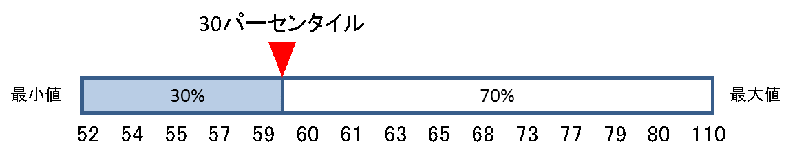
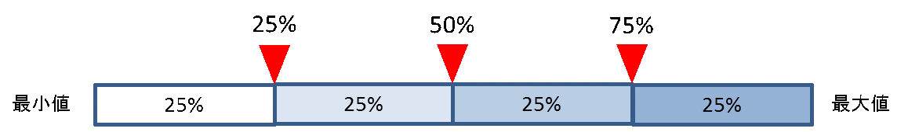
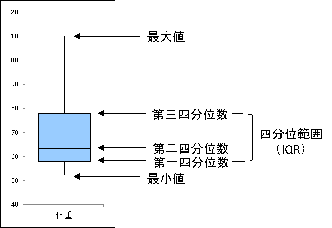

Python
Tips
import module
とりあえずsys.path.appendにpythonファイルのあるディレクトリを指定しておけばimportできる
from pathlib import Path
import sys
util_path = Path(__file__).resolve().parents[1] / "utils" # 一応絶対パスにしておく
sys.path.append(str(util_path)) # 文字列型に変換すること
import util # utils/util.py
import os
import sys
HOGE_MOD_DIR = os.environ.get('HOGE_MOD_DIR') # 環境変数から取得する
if HOGE_MOD_DIR:
sys.path.append(HOGE_MOD_DIR)
import hoge
sys.path.appendで重複確認
JupyterやFusion360などカーネルが起動し続けるタイプのものでは、自作モジュールを追加するためにsys.pathに追加するが、毎回実行していると同じパスが何回も追加されるので、それを防ぐ処理があった方がいい
util_path = pathlib.Path(__file__).resolve().parents[1] / "utils"
if len([s for s in sys.path if str(util_path) in s]) == 0:
sys.path.append(str(util_path))
import util
reload
importlibを使う
import importlib
a = importlib.import_module('a')
a = importlib.reload(a)
ワンライナー
$ cat file1.txt | python -c 'import sys; [print(l,end="") for l in sys.stdin]' # catと同じ動作
# モジュールパスの表示
$ python -c 'import sys; import pprint; pprint.pprint(sys.path)'
# 環境変数のdump
$ export HOGE="FOO"
$ python -c 'import os; e = os.environ.get("HOGE"); print(e, end="")' > FOO.txt
$ python -c 'import os; e = os.environ.get("HOGE"); f = open("./FOO2.txt", mode="w"); f.write(e); f.close()'
# テキスト読み込み
$ python -c 'f = open("./FOO.txt"); print(f.read()); f.close()'
# パイプラインから読み込み
$ cat file1.txt | python -c 'import sys; [print(l,end="") for l in sys.stdin]'
# catした文字を空白をあけて出力
$ cat file1.txt | python -c 'import sys; [print(" ".join(l),end="") for l in sys.stdin]'
linuxコマンド実行
コンソールで打った結果と同じものが出力される
import subprocess
subprocess.run("ls -l", shell=True)
結果をpythonで取得したい場合
from cgitb import text
import subprocess
completed_process = subprocess.run("ls -l", shell=True, capture_output=True, text=True)
print(f"returncode: {completed_process.returncode}")
print("stdout: ")
print(f"{completed_process.stdout}")
print("stderr: ")
print(f"{completed_process.stderr}")
標準エラー出力を標準出力へ向ける
cp = subprocess.run("ls", stdout=subprocess.PIPE, stderr=subprocess.STDOUT)
コマンドの出力結果を捨てる
subprocess.run("ls", stdout=subprocess.DEVNULL, stderr=subprocess.DEVNULL)
コマンドの標準入力にデータを渡す
subprocess.run("cat", input="foo\nbar\n", text=True)
ファイル読み書き
s = 'New file'
with open(path_w, mode='w') as f:
f.write(s)
# 複数行のテキストの場合は改行も込みで一括で読み込む
with open(path_w) as f:
print(f.read())
# 文字列を一括で書き込む
s = 'New line 1\nNew line 2\nNew line 3'
with open(path_w, mode='w') as f:
f.write(s)
# 行ごとにリスト形式で読み込み
with open(path) as f:
l_strip1 = [s.strip() for s in f.readlines()] # 改行コード削除
l_strip2 = [s.strip() for s in f.readlines() if s.strip()] # 改行だけの行も削除
# リストを行ごとに保存
l = ['One', 'Two', 'Three']
with open(path_w, mode='w') as f:
f.write('\n'.join(l))
# withを使わない場合は自分でcloseする
f = open(path)
f.close()
# 開くときはxオプションだと既存ファイルがある場合はエラーになる
# aオプションだと末尾に追加
try:
with open(path_w, mode='x') as f:
f.write(s)
except FileExistsError:
pass
with open(path_w, mode='a') as f:
f.write('\nFour')
# 空のファイルを作成する
with open('temp/empty.txt', 'w'):
pass
UTF-8 BOM付で保存
import os,csv
header = ["header"]
output_data = ["文字コードがBOM付きのUTF-8","のCSVファイルが出力したい"]
path = "./sample.csv"
def writecsv(path):
with open(path, 'w', encoding="utf_8_sig") as f:
writer = csv.writer(f, lineterminator='\n') # 改行コード（\n）を指定しておく
writer.writerow(header)
writer.writerow(output_data)
writecsv(path)
IOモジュール
メモリ上のデータをファイルオブジェクト化
https://docs.python.org/ja/3/library/io.html#io.StringIO
import io
import pandas as pd
txt = """
number,name,score
1,hoge,100
"""
# StringIOをかませると恰もファイルのように読み込める
f = io.StringIO(txt)
df = pd.read_csv(f, index_col="number")
# 書き込みもできる(ファイルの実体はないので、実際は何も起きない)
f = io.StringIO()
f.write("hoge\n")
f.close()
# バイナリデータの場合
f = io.BytesIO(bin_data)
URL上のデータを保存
PythonでWeb上の画像などのファイルをダウンロード（個別・一括） | note.nkmk.me
urllib.request.urlopen()が推奨urllib.request.urlretrieve()は廃止される可能性あり
import urllib.error
import urllib.request
from pathlib import Path
def download_file(url, dst_path):
try:
with urllib.request.urlopen(url) as web_file, open(dst_path, 'wb') as local_file:
local_file.write(web_file.read())
except urllib.error.URLError as e:
print(e)
file_name = Path(url).name
download_file(url, file_name)
zipファイルの解凍
import zipfile
with zipfile.ZipFile('archive_zipfile.zip') as zf:
zf.extractall('dir_out_extractall') # 省略するとカレントに解凍
archive_shutil_base
└──dir_zip
├── dir_sub
│ └── file_sub.txt
└── file.txt
import shutil
# dir_zip自体は保存されない
shutil.make_archive('archive_shutil', format='zip', root_dir='dir_zip')
# dir_zip自体は保存される
shutil.make_archive('archive_shutil_base', format='zip', root_dir='.', base_dir='dir_zip')
shutil.unpack_archive('archive_shutil.zip', 'dir_out')
グローバル変数
hoge = 10
def foo():
hoge = 100
print(hoge) # 100 ローカル変数扱い
def boo():
global hoge
print(hoge) # 10 グローバル変数扱い
__main__
if __name__ == "__main__":
pass
printの無効化
import sys, os
def blockPrint():
sys.stdout = open(os.devnull, 'w')
def enablePrint():
sys.stdout = sys.__stdout__
print ('This will print')
blockPrint()
print ("This won't")
enablePrint()
print ("This will too")
パイプ処理に対応
受け取り
"""標準入力から csv を読む
"""
import sys
import csv
from itertools import islice
def main():
"""標準入力で与えられた csv を読み込む
- 最初の 5 行だけ、ヘッダーなしで読み込む
"""
rows, header = csv_read_stdin(5, True)
print("Rows: {}".format(list(rows)))
def csv_read_stdin(number, is_headerless):
"""標準入力から csv を読み込む
"""
if sys.stdin.isatty():
sys.stderr.write("標準入力はパイプまたはリダイレクトで渡してください。\n")
exit()
reader = csv.reader(sys.stdin)
header = [] if is_headerless else next(reader)
rows = islice(reader, number)
return rows, header
if __name__ == "__main__":
main()
$ python read_csv.py
標準入力はパイプまたはリダイレクトで渡してください。
$ python read_csv.py <<EOS
> Takeda,Shingen
> Takeda,Katsuyori
> EOS
Rows: [['Takeda', 'Shingen'], ['Takeda', 'Katsuyori']]
パイプ入力とオプション入力を両方扱うテンプレ
import argparse
import sys
parser = argparse.ArgumentParser()
parser.add_argument('--hoge', type=str)
parser.add_argument('--foo', type=int)
parser.add_argument('stdin', nargs='?', type=argparse.FileType('r'), default=sys.stdin) # ?オプションで1個の引数を取る
args = parser.parse_args()
if not sys.stdin.isatty(): # パイプから渡されるとis a tty == Falseとなる
stdin = parser.parse_args().stdin.read().splitlines()
else:
stdin = []
print("args: ", args.hoge, args.foo)
print("stdin: ", stdin)
# dump.py
print(100)
print("aaa")
$ python dump.py | pype.py --hoge hogeee --foo 1000
args: hogeee 1000
stdin: ['100', 'aaa']
余ってる引数も処理する(使う場面はあまりない)
import argparse
import sys
parser = argparse.ArgumentParser()
parser.add_argument('--hoge', type=str)
parser.add_argument('--foo', type=int)
parser.add_argument('args', nargs=argparse.REMAINDER) # 残りの引数をすべて取るオプション
parser.add_argument('stdin', nargs='?', type=argparse.FileType('r'), default=sys.stdin) # ?オプションで1個の引数を取る
args = parser.parse_args()
if not sys.stdin.isatty(): # パイプから渡されるとis a tty == Falseとなる
stdin = parser.parse_args().stdin.read().splitlines()
else:
stdin = []
print("args: ", parser.parse_args().args)
print("args option: ", args.hoge, args.foo)
print("stdin: ", stdin)
$ python dump.py | python pipe.py --hoge hogeee --foo 1000 moo noo
args: ['moo', 'noo']
args option: hogeee 1000
stdin: ['100', 'aaa']
受け渡し
処理中のprint文を常に受け取りたい場合は -u オプションを付ける
import sys, os
import time
while True:
def blockPrint():
sys.stdout = open(os.devnull, 'w')
def enablePrint():
sys.stdout = sys.__stdout__
print ('This will print')
blockPrint()
print ("This won't")
enablePrint()
print ("This will too")
time.sleep(2)
python -u hoge.py | tee log.txt
テンプレ
仕様
send側でコマンドオプション込みで直接渡したい
receive側でもオプションの入力があった場合はそちらを優先する
オプショナルな引数がreceive側にある
# send_no_opt.py
print("hoge_input_from_send")
# send_opt.py
print("hoge_input_from_send")
print("--foo")
print("800")
# receive.py
import sys
import argparse
def main(args: argparse.Namespace):
print(args)
def parse_args_sdtin(args):
args_normal = parse_args_normal(args, False, False)
args_stdin = parse_args_normal(args, add_optional=False, add_stdin=True)
# コマンド入力で指定されたオプションがある場合はパイプラインの入力を上書き
if args_normal.foo is not None:
args_stdin.foo = args_normal.foo
return args_stdin
def parse_args_normal(args, add_optional: bool = True, add_def: bool = True, add_stdin: bool = False) -> argparse.Namespace:
parser = argparse.ArgumentParser()
if add_optional:
parser.add_argument('hoge', type=str)
parser.add_argument('--foo', type=int, default=100 if add_def else None)
if add_stdin:
parser.add_argument('stdin', nargs='?', type=argparse.FileType('r'), default=sys.stdin)
if add_stdin is False:
args_normal = parser.parse_args(args) # 引数の結果を取得
else:
# パイプラインの入力取り込み
args_stdin_list = parser.parse_args().stdin.read().splitlines()
# パイプライン入力値のリストを再度パース
args_normal = parse_args_normal(args_stdin_list)
return args_normal
def parse_args_with_pipe(args):
if not sys.stdin.isatty(): # パイプ入力があるとき
args_whole = parse_args_sdtin(args)
else: # パイプないとき
args_whole = parse_args_normal(args)
return args_whole
if __name__ == "__main__":
main(parse_args_with_pipe(sys.argv[1:]))
# テストケース
python send_no_opt.py | python receive.py --foo 300
# Namespace(foo=300, hoge='hoge_input_from_send')
python send_no_opt.py | python receive.py
# Namespace(foo=100, hoge='hoge_input_from_send')
python send_opt.py | python receive.py --foo 300
# Namespace(foo=300, hoge='hoge_input_from_send')
python send_opt.py | python receive.py
# Namespace(foo=800, hoge='hoge_input_from_send')
python receive.py hoge_input
# Namespace(foo=100, hoge='hoge_input')
python receive.py hoge_input --foo 300
# Namespace(foo=300, hoge='hoge_input')
パス操作
import os
path = os.path.join('dir', 'subdir', 'filename.ext') # パスを結合
モジュールの動的リロード
import importlib
importlib.reload(モジュール名)
演算子のオーバーロード
特殊メソッドを実装すると実現できる
比較演算子
class Foo():
def __init__(self,x):
self.__x = x
def __lt__(self, other):
print("__lt__")
return self.__x < other
def __le__(self, other):
print("__le__")
return self.__x <= other
def __eq__(self, other):
print("__eq__")
return self.__x == other
def __ne__(self, other):
print("__ne__")
return self.__x != other
def __gt__(self, other):
print("__gt__")
return self.__x > other
def __ge__(self, other):
print("__ge__")
return self.__x >= other
x = Foo(100)
x < 10
x <= 10
x == 10
x != 10
x > 10
x >= 10
算術演算子(左辺)
自身と同じクラスの新規オブジェクトとして返す
class Foo():
def __init__(self,x):
self.__x = x
def __add__(self, other):
print("__add__")
return self.__class__(self.__x + other)
def __sub__(self, other):
print("__sub__")
return self.__class__(self.__x - other)
def __mul__(self, other):
print("__mul__")
return self.__class__(self.__x * other)
def __truediv__(self, other):
print("__truediv__")
return self.__class__(self.__x / other)
def __floordiv__(self, other):
print("__floordiv__")
return self.__class__(self.__x // other)
def __mod__(self, other):
print("__mod__")
return self.__class__(self.__x % other)
def __pow__(self, other):
print("__pow__")
return self.__class__(self.__x ** other)
def __lshift__(self, other):
print("__lshift__")
return self.__class__(self.__x << other)
def __rshift__(self, other):
print("__rshift__")
return self.__class__(self.__x >> other)
def __and__(self, other):
print("__and__")
return self.__class__(self.__x & other)
def __xor__(self, other):
print("__xor__")
return self.__class__(self.__x ^ other)
def __or__(self, other):
print("__or__")
return self.__class__(self.__x | other)
x = Foo(100)
x + 10
x - 10
x * 10
x / 10
x // 10
x % 10
x ** 10
x << 10
x >> 10
x & 10
x ^ 10
x | 10
算術演算子(右辺)
class Foo():
def __init__(self,x):
self.__x = x
def __add__(self, other):
print("__add__")
return self.__class__(self.__x + other)
def __radd__(self, other):
print("__radd__")
return self.__class__(self.__x + other)
x = Foo(100)
x + 10
10 + x
算術代入演算子
class Foo():
def __init__(self,x):
self.__x = x
def __iadd__(self, other):
print("__iadd__")
self.__x += other
return self
def __isub__(self, other):
print("__isub__")
self.__x -= other
return self
def __imul__(self, other):
print("__imul__")
self.__x *= other
return self
def __itruediv__(self, other):
print("__itruediv__")
self.__x /= other
return self
def __ifloordiv__(self, other):
print("__ifloordiv__")
self.__x //= other
return self
def __imod__(self, other):
print("__imod__")
self.__x %= other
return self
def __ipow__(self, other):
print("__ipow__")
self.__x **= other
return self
def __ilshift__(self, other):
print("__ilshift__")
self.__x <<= other
return self
def __irshift__(self, other):
print("__irshift__")
self.__x >>= other
return self
def __iand__(self, other):
print("__iand__")
self.__x &= other
return self
def __ixor__(self, other):
print("__ixor__")
self.__x ^= other
return self
def __ior__(self, other):
print("__ior__")
self.__x |= other
return self
x = Foo(100)
x += 1
x = Foo(100)
x -= 1
x = Foo(100)
x *= 1
x = Foo(100)
x /= 1
x = Foo(100)
x //= 1
x = Foo(100)
x %= 1
x = Foo(100)
x **= 1
x = Foo(100)
x <<= 1
x = Foo(100)
x >>= 1
x = Foo(100)
x &= 1
x = Foo(100)
x ^= 1
x = Foo(100)
x |= 1
単項演算子
class Foo():
def __init__(self,x):
self.__x = x
def __neg__(self):
print("__neg__")
return self.__class__(-self.__x)
def __pos__(self):
print("__pos__")
return self.__class__(+self.__x)
def __invert__(self):
print("__invert__")
return self.__class__(~self.__x)
x = Foo(100)
-x
+x
~x
三項演算子
条件式が真のときに評価される式 if 条件式 else 条件式が偽のときに評価される式
result = 'even' if a % 2 == 0 else 'odd' # 値を返す
result = a * 2 if a % 2 == 0 else a * 3 # 式を返す
print('even') if a % 2 == 0 else print('odd') # 何も返さない
# for文で適当に進捗出したいとき
for i in range(230):
print(i) if i%100==0 else _
lambda関数
def 名前(引数, 引数, ...):
return 式
名前 = lambda 引数, 引数, ...: 式
# e.g.
def add(a, b=1):
return a + b
add = lambda a, b=1: a + b
# if文は三項演算子で使用可能
get_odd_even = lambda x: 'even' if x % 2 == 0 else 'odd'
# elseは必ず必要らしい
print(i) if i % 1000 == 0 else _
map関数
map(callable, *iterable)
map(N個引数のあるfunction, iterable1, iterable2, ..., iterableN)
# 例
list(map(int, ("1", "2", "3", "4", "5")))
# [1, 2, 3, 4, 5]
list(map(lambda k: k+k, {"a": 2, "b": 3, "c": 5, "d": 7})) # 辞書型はデフォルトはkeyのみ
# ['aa', 'bb', 'cc', 'dd']
list(map(lambda x: x[0]*x[1], {"a": 2, "b": 3, "c": 5, "d": 7}.items())) # x[0]がkey, x[1]がitem
# ['aa', 'bbb', 'ccccc', 'ddddddd']
callable
関数
()を付けて呼び出せるもの(クラスとか)
iterable
list
tuple
dict
str
ジェネレータ式(イテレータ)
mapオブジェクト(イテレータ)
fileオブジェクト(イテレータ)
ランダム
ランダムな小数、整数
import random
# 0.0以上1.0未満の浮動小数点数float型の乱数
print(random.random())
# 0.4496839011176701
# a <= n <= bまたはb <= n <= a）の浮動小数点数float型の乱数
print(random.uniform(100, 200))
# 175.26585048238275
# 任意の範囲・ステップの整数
# randrange(start, stop, step)
print(list(range(10, 20, 2)))
# [10, 12, 14, 16, 18]
print(random.randrange(10, 20, 2))
# 18
特定の分布に従うものも作れる
ベータ分布: random.betavariate()
指数分布: random.expovariate()
ガンマ分布: random.gammavariate()
ガウス分布: random.gauss()
対数正規分布: random.lognormvariate()
正規分布: random.normalvariate()
フォン・ミーゼス分布: random.vonmisesvariate()
パレート分布: random.paretovariate()
ワイブル分布: random.weibullvariate()
重複なしのリスト
import random
random.seed(0) # シードを固定すると再現可能になる
l = [0, 1, 2, 3, 4]
print(random.sample(l, 3)) # リスト, 取り出す個数
# [2, 4, 0]
# indexが重複しないだけなので、リスト内に重複値が元々入っていると値が重複する可能性あり
print(random.sample(range(10), k=5))
# [6, 4, 3, 7, 5]
print(random.sample(range(100, 200, 10), k=5))
# [130, 190, 140, 150, 170]
リストの生成
numpyを使った方がよい
arr = np.random.randint(4, 10, (3, 3)) # 4以上10未満の3 x 3の配列の整数乱数
np.random.randint(4, 10, 3, dtype=int)
# array([4, 7, 4])
組み合わせ
順列・組み合わせ
複数リストの直積
import itertools
import pprint
l1 = ['a', 'b', 'c']
l2 = ['X', 'Y', 'Z']
p = itertools.product(l1, l2)
for v in p:
print(v)
# ('a', 'X') # タプル型になる
# ('a', 'Y')
# ...
# この処理と同じ
for v1 in l1:
for v2 in l2:
print((v1, v2))
list(itertools.product(l1, l2)) # list型で取得できる
functools
高階関数 functools.reduce()
シーケンスデータ → 一つの値にまとめる処理に使える。sumとかの汎用系
from functools import reduce
def my_sum(x, y):
print(x, y)
return x + y
reduce(my_sum, [1, 2, 3, 4]) # 10
# 1 2
# 3 3
# 6 4
# lambda使う場合
reduce(lambda x, y : x + y, [1, 2, 3, 4])
lru_cache
このデコレータをつけておくと、複数回同じ引数を入れたときに、最初の計算結果を即座に返すようになります。
from functools import lru_cache
import time
@lru_cache
def f(x):
time.sleep(3)
return x
最小公倍数・最大公約数
# python3.8以前
import math
from functools import reduce
# 最小公倍数計算
def lcm_pair(x, y):
return (x * y) // math.gcd(x, y)
def my_lcm(iter_data):
return reduce(lcm_pair, iter_data)
my_lcm([2,3,4]) # 12
Typeヒント
from typing import List, Set, Dict, Tuple, Optional
def hoge(img:np.ndarray) -> Tuple[float,float]:
pass
def hoge(img:np.ndarray, rect:Tuple[float,float]) -> np.ndarray:
pass
def hoge(img:np.ndarray, param:Tuple[float,float])->Tuple[np.ndarray, Tuple[int,int]]:
pass
def hoge(img:np.ndarray, param:int=200)->Tuple[float, float]:
pass
# 複数の戻り値返す場合はTupleで囲む
def hoge(img:np.ndarray, param:Tuple[float,float]=(0.1,0.2))->Tuple[Tuple[float,float],Tuple[int,int]]:
pass
例外処理 try/except
# エラーを投げる
raise ValueError("error!")
# システム終了以外のすべてのエラーをキャッチ
def divide_exception(a, b):
try:
print(a / b)
except Exception as e:
print(e)
else:
print("hoge") # エラーが発生しなかった場合の処理
finally:
print("always execute") # エラーが出ても出なくても必ず実行される
# ファイル存在確認を自前でやる(cv2とかはエラー出ないので)
import errno
import os
if file_hoge.exists() == False:
raise FileNotFoundError(errno.ENOENT, os.strerror(errno.ENOENT), str(file_hoge))
try:
print(1 / 0)
except ZeroDivisionError as e:
print(e)
print(type(e))
except TypeError as e: # 例外は複数指定可能
print('catch TypeError:', e)
except (ZeroDivisionError, TypeError) as e: # 2つ以上の例外を一緒に補足したい場合
print(e)
システム(ユーザーからの終了コマンドとか)による終了以外のすべて例外をキャッチ
開ける画像をすべて開くときの例
files = glob.glob('./data/temp/images/*')
for f in files:
try:
img = Image.open(f)
img_resize = img.resize((img.width // 2, img.height // 2))
root, ext = os.path.splitext(f)
basename = os.path.basename(root)
img_resize.save(os.path.join(dst_dir, basename + '_half' + ext))
except OSError as e:
pass
デバッグとかで一時的に無効にしたいとき
try:
print 'foo'
# A lot more code...
print 'bar'
except:
if settings.DEBUG: # デバッグ用フラグ
raise # try-exceptがないときと同じエラーメッセージが確認できる
例外の再送
def err01():
try:
print("try01")
raise ValueError("hoge")
except Exception as e:
print("error01!!", e)
raise # 同じエラーが外側のtryにも伝播する
else:
print("success01")
finally:
print("finally01")
def err02():
try:
print("try02")
err01()
except Exception as e:
print("error02!!", e)
else:
print("success02")
finally:
print("finally02")
err02()
# 出力:
# try02
# try01
# error01!! hoge
# finally01
# error02!! hoge
# finally02
正規表現
一致箇所を取り出す
import re
s = '001_hoge_foo.jpg'
m = re.match(r'([0-9]*)_(.*)_', s)
print(m.groups())
# ('001', 'hoge')
# グループに名前を付けられる (?P<グループ名>検索条件)
m = re.match(r'(?P<local>[a-z]+)@(?P<SLD>[a-z]+)\.(?P<TLD>[a-z]+)', s)
print(m.group('local'))
# aaa
# 辞書型で取得もできる
print(m.groupdict())
# {'local': 'aaa', 'SLD': 'xxx', 'TLD': 'com'}
置換
s = 'aaa@xxx.com, bbb@yyy.com, ccc@zzz.net'
result = re.sub(r'([a-z]+)@([a-z]+)\.com', r'\1@\2.net', s) # \1で最初のグループ
print(result)
# aaa@xxx.net, bbb@yyy.net, ccc@zzz.net
result = re.sub(r'(?P<local>[a-z]+)@(?P<SLD>[a-z]+)\.com', r'\g<local>@\g<SLD>.net', s) # \g<グループ名>で指定できる
print(result)
# aaa@xxx.net, bbb@yyy.net, ccc@zzz.net
検索
import re
s = 'I am Sam'
if re.search('Sam', s):
print("ok")
if re.search(r'.*Sam', s): # 正規表現
print("ok")
否定表現
^(?!.*abc).*$ # abcを含まない行にマッチ
^(?!.*(abc|efg)).*$ # abcまたはefgを含まない行にマッチ
^(?!abc).*$ # abcで始まらない行にマッチ
^(?!.*abc$).*$ # abcで終わらない行にマッチ
^(?=.*abc)(?!.*def).*$ # 「abc」を含み、「def」を含まない行にマッチ
文字列処理
検索
# 文字列中に任意の文字列が含まれているか判定
s = 'I am Sam'
print('Sam' in s) # True
print('sam' in s) # False
print('sam' in s.lower()) # True
# 任意の文字列の位置を取得 (複数マッチしても1個目だけ返す)
print(s.find('Sam')) # 5
print(s.find('XXX')) # -1
結合
'間に挿入する文字列'.join([連結したい文字列のリスト])
l = ['aaa', 'bbb', 'ccc']
s = ','.join(l)
置換
s = 'one two one two one'
print(s.replace(' ', '-')) # one-two-one-two-one
# 空文字指定で削除
print(s.replace(' ', '')) # onetwoonetwoone
# 複数の文字列を一辺に置換
print(s.replace('one', 'XXX').replace('two', 'YYY')) # XXX YYY XXX YYY XXX
# 改行文字を置換
print(s_lines_multi.splitlines()) # ['one', 'two', 'three']
print('-'.join(s_lines_multi.splitlines())) # one-two-three
文字単位で置換
s = 'one two one two one'
print(s.translate(str.maketrans({'o': 'O', 't': 'T'}))) # One TwO One TwO One
print(s.translate(str.maketrans({'o': 'XXX', 't': None}))) # XXXne wXXX XXXne wXXX XXXne
print(s.translate(str.maketrans('ow', 'XY', 'n'))) # Xe tYX Xe tYX Xe
# swap
print(s.translate(str.maketrans('ot', 'to'))) # tne owt tne owt tne
リストの値をダブルクォーテーションで出力
https://stackoverflow.com/questions/32606599/return-a-variable-in-a-python-list-with-double-quotes-instead-of-single
import json
l = ["A", "B"]
print(json.dumps(l))
# ["A", "B"]
join
'間に挿入する文字列'.join([連結したい文字列のリスト])
l = ['aaa', 'bbb', 'ccc']
s = '-'.join(l)
print(s)
# aaa-bbb-ccc
split
s_blank = 'one two three\nfour\tfive'
print(s_blank.split()) # デフォルトではスペース、タブ、改行はまとめて区切る
# ['one', 'two', 'three', 'four', 'five']
# 任意の文字列で分割
s_comma = 'one,two,three,four,five'
print(s_comma.split(','))
# ['one', 'two', 'three', 'four', 'five']
print(s_comma.split('three'))
# ['one,two,', ',four,five']
pickleテンプレート
import pickle
with open('singer.pickle', 'wb') as f:
pickle.dump(hoge, f)
with open('singer.pickle', 'rb') as f:
hoge = pickle.load(f)
デバッグ breakpoint()
for i in range(5):
print(i)
breakpoint() # デバッガで使えるコマンドはhelpコマンドで確認できる
breakpointで専用の関数を実行できる
import sys
sys.breakpointhook = break_func
def break_func():
print('break!')
if __name__ == '__main__':
for i in range(5):
print(i)
breakpoint()
よく使うコマンド
https://docs.python.org/ja/3/library/pdb.html
s: 1行実行
n: 次の行が関数呼び出しの場合はreturnまで、それ以外はsと同じ(階層を潜ることはしない)
unt 行数: 引数なしでsと同じ。実行する行数を指定できる
r: 現在の関数のreturnまで実行
c: 次のブレークポイントまで実行
l: 前後の行を表示、詳細はリンク参照
a: 現在の関数の引数を表示
p 評価式: 結果を表示。変数指定すればprintと同じ
pp 評価式: pprint版
whatis 評価式: 型を表示
run [args…]: プログラムを再実行する
q: デバッガを終了する、プログラムは中断される
処理時間計測
import time
# 時間計測開始
time_sta = time.perf_counter()
# 処理を書く（ここでは5秒停止する）
time.sleep(5)
# 時間計測終了
time_end = time.perf_counter()
# 経過時間（秒）
tim = time_end- time_sta
print(tim)
#[結果] 4.99997752884417
日時取得
from datetime import date
print(date.today()) #2019-09-08
today = date.today()
print('year: {}, month: {}, day: {}'.format(today.year, today.month, today.day))
from datetime import datetime, time
now = datetime.now().time()
print('現在時刻は{}時{}分{}.{}秒です'.format(now.hour, now.minute, now.second, now.microsecond))
from datetime import datetime, time
# 現在時刻を取得する
now = datetime.now().time()
# isoフォーマットで出力(マイクロ秒あり)
print(now.isoformat()) # 13:17:17.342040
# isoフォーマットで出力(マイクロ秒なし)
print(now.isoformat(timespec='seconds')) # 13:17:17
# 任意の形式で出力
# 13時17分17.342040秒
print(now.strftime('%-H時%-M分%-S.%f秒'))
# タイムスタンプ用
from datetime import datetime
print(datetime.now().time().strftime('%-H:%-M:%-S.%f'))
# 指定の時刻で設定したいとき
dt = datetime(2019, 9, 8, hour=14, minute=20, second=10)
これが一番便利
from datetime import datetime
# 現在時間を取得する
now = datetime.today()
# isoフォーマットで出力(マイクロ秒あり) マイクロ秒は6桁で固定？
print(now.isoformat()) # 2019-09-08T14:57:36.896772
# isoフォーマットで出力(マイクロ秒なし)
print(now.isoformat(timespec='seconds')) # 2019-09-08T14:57:36
# 任意の形式で出力
print(now.strftime('%Y年%-m月%-d日 %-H時%-M分%-S.%f秒')) # 2019年9月8日 14時57分36.896772秒
print(now.strftime('%Y%m%d_%H%M%S')) # 20220106_171411
print(now.strftime('%Y%m%d_%H%M%S_%f')) # 20220106_171411_469764
# 文字列から復元する フォーマットを指定すれば任意の形式でも扱える
custome_time = datetime.strptime('2019年9月8日 14時38分1秒', '%Y年%m月%d日 %H時%M分%S秒')
custome_time = datetime.strptime('20220106_171411_469764', '%Y%m%d_%H%M%S_%f')
# isoformatから復元
iso_str = now.isoformat()
datetime.fromisoformat(iso_str)
UNIX時間
import datetime
# unix時間からdatetimeを作成
dt = datetime.datetime.fromtimestamp(0)
print(dt) # 1970-01-01 09:00:00
print(dt.timestamp()) # 任意のdatetimeをunix時間に変換
sort
import operator
org_list = [3, 1, 4, 5, 2]
org_list.sort() # 元のリストがsortされる # [1, 2, 3, 4, 5]
new_list = sorted(org_list) # 元のリストは不変
# 辞書データの配列を特定のキーの値でsort
l_dict = [{'k1': 2, 'k2': 10}, {'k1': 1}, {'k1': 3}]
print(sorted(l_dict, key=operator.itemgetter('k1'))) # [{'k1': 1}, {'k1': 2, 'k2': 10}, {'k1': 3}]
# 入れ子の辞書をソート
d = { 'a':{'k':1, 'b':'whatever'}, 'b':{'k':2, 'b':'sort by k'} }
sorted(d.items(),key=lambda x: x[1]['k'],reverse=True) # x[1]でitemsのvalueが取得できる
# [('b', {'b': 'sort by k', 'k': 2}), ('a', {'b': 'whatever', 'k': 1})]
list
初期化
# 2次元配列の0初期化
row = 3
col = 4
x = [[0] * col for i in range(row)]
x[row-1][col-1]
結合
l = list(range(3)) # [0, 1, 2]
l.extend([100, 101, 102]) # [0, 1, 2, 100, 101, 102]
l2 = l + [5, 6, 7]
l += [5, 6, 7]
insert
l = list(range(3))
print(l) # [0, 1, 2]
l.insert(0, 100)
print(l) # [100, 0, 1, 2]
l.insert(-1, 200)
print(l) # [100, 0, 1, 200, 2]
要素が入っているか判定
prg = ['python', 'java', 'c#']
if 'python' in prg: # タプルでもrangeでも可
print('OK')
else:
print('NO')
if 'python' not in prg: # 否定
print('OK')
要素の除外
l = list(range(10))
# [0, 1, 2, 3, 4, 5, 6, 7, 8, 9]
l.clear() # 全クリア
print(l.pop(0)) # インデックス指定して除外
print(l.pop(-1)) # 末尾から指定可能 -1で末尾
print(l.pop()) # デフォルトは-1と同じ
del l[0] # popせずに削除だけ行う
del l[-1]
del l[6]
del l[2:5] # スライス形式でも指定可能
l = ['Alice', 'Bob', 'Charlie', 'Bob', 'Dave']
l.remove('Alice') # 最初に一致した値を削除
ループ内で除外
list_of_num = [51, 52, 53, 54, 55, 54, 56, 57, 58, 59]
for elem in list(list_of_num): # コピーに対して除外判定を行うことでイテレータがずれるのを防ぐ
if elem == 54 or elem == 55:
list_of_num.remove(elem)
print(list_of_num) # [51, 52, 53, 56, 57, 58, 59]
# 別手法
list_of_num = [num for num in list_of_num if num != 54 and num !=55] # if文で条件を満たすものだけの新しいリストを作成する
# 別手法
list_of_num = list(filter(lambda num: num != 54 and num !=55, list_of_num)) # filter関数を使用、Trueのものだけのリストができる
スライス
l = [0, 10, 20, 30, 40, 50, 60]
print(l[2:5]) # [20, 30, 40]
dict
キーがあるか判定
d = {'key1': 'val1', 'key2': 'val2', 'key3': 'val3'}
print('key1' in d.keys()) # True
print('key5' not in d.keys()) # True
キーから値を取得
d = {'key1': 'val1', 'key2': 'val2', 'key3': 'val3'}
print(d.get('key5', 'NO KEY')) # NO KEY
print(d.get('key5', 100)) # 100
jsonデータから読み込み
import json
# ファイルから読み込み
with open('data/src/test.json') as f:
df = json.load(f)
# 文字列から読み込み (''で囲まないといけない)
json.loads('{"hoge": "foo", "key": 100}')
# {'hoge': 'foo', 'key': 100}
# リストも可能
json.loads('["hoge", "foo", 100]')
# ['hoge', 'foo', 100]
結合
d1 = {'k1': 1, 'k2': 2}
d2 = {'k1': 100, 'k3': 3, 'k4': 4}
d1.update(d2)
print(d1) # {'k1': 100, 'k2': 2, 'k3': 3, 'k4': 4}
# 複数一遍に結合
d3 = {'k5': 5, 'k6': 6}
d1.update(**d2, **d3)
print(d1) # {'k1': 1, 'k2': 2, 'k3': 3, 'k4': 4, 'k5': 5, 'k6': 6}
# 新しいデータを作成
dict(**d1, **d2)
jsonデータで保存
with open('data/dst/test2.json', 'w') as f:
json.dump(dict_data, f, indent=4, ensure_ascii=False) # ensure_ascii=Falseとすると日本語などがそのまま出力される
文字列に変換する場合
s = json.dumps(dict_data, indent=4, ensure_ascii=False) # ensure_ascii=Falseとすると日本語などがそのまま出力される
# separators=(',', ':') # 空白をなくしたい場合はこれをオプションに追加
keyとvalueを反転
https://stackoverflow.com/questions/1031851/how-do-i-exchange-keys-with-values-in-a-dictionary
res = dict((v,k) for k,v in a.items())
copy
d2 = copy.deepcopy(d) # 中身も丸っとコピーされる
tuple
同じ要素を複製
(1, )*3 # (1, 1, 1)
結合
(1, ) + (1, 2) # (1, 1, 2)
アンパック
t = (0, 1, 2, 3, 4)
a, b, *c = t
print(a) # 0
print(b) # 1
print(c) # [2, 3, 4]
namedtuple
データ構造を辞書型よりも簡単に記述できる。
imuutableなので、キーが追加されたり書き換えられたりすることがなく、安心。
from collections import namedtuple
Car = namedtuple('Car' , 'color mileage')
my_car = Car('red', 3812.4)
print(my_car.color) # 'red'
print(my_car.mileage) # 3812.4
my_car._asdict() # OrderedDict型へ変換
set
s = {0, 1, 2}
s.add(3)
s_union = s1 | s2 # 和 |= も可
s_intersection = s1 & s2 # 積
s_difference = s1 - s2 # 差
decorator
unique
Enum用のデコレータ。値に重複があるとエラーを起こす (常に確認する)
from enum import unique, Enum
@unique
class Mistake(Enum):
ONE = 1
TWO = 2
THREE = 3
FOUR = 3 # 重複があるとエラー
a = Mistake(1)
print(a, a.name, a.value) # Mistake.ONE ONE 1
抽象クラスと継承
仕様
__init__は継承先でも必要？(ないとエラーになるケースもあるっぽいが詳細不明)引数の形は変えられる(けど変えない方がいい)
継承先で
super().__init__内で他の関数を呼び出す場合、オーバーライドの結果は反映されている
from abc import ABC, abstractmethod
class MyABC(ABC):
def __init__(self):
self.val = 100
@abstractmethod # これ付けると継承先は必ず実装しないといけない
def calc(self, a):
return self.val+a
def hoge(self, b):
return b+100
class Foo(MyABC):
def __init__(self):
super().__init__() # 親メソッド使える, 完全に同じなら実装は不要???
def calc(self, a, b): # 継承関数の引数は変えられる
return self.val*a+b
foo = Foo()
foo.calc(2,3)
foo.hoge(100) # オーバーライドしない場合はスーパークラスがそのまま使える
静的メソッドの指定
class Student:
def __init__(self, name, school):
self.name = name
self.school = school
self.marks = []
def average(self):
"""平均成績を返す
インスタンス変数にアクセスしたいのでinstancemethodを使う。
"""
return sum(self.marks) / len(self.marks)
@classmethod
def friend(cls, origin, friend_name, *args):
"""同じ学校の友達を追加する。
継承クラスで動作が変わるべき(継承クラスでは salaryプロパティがある)
なのでclassmethodを使う。
子クラスの初期化引数は *argsで受けるのがいい
"""
return cls(friend_name, origin.school, *args)
@staticmethod
def say_hello():
"""先生に挨拶する
継承しても同じ動きでいいのでstaticmethodを使う
"""
print("Hello Teacher!")
class WorkingStudent(Student):
def __init__(self, name, school, salary):
super().__init__(name, school)
self.salary = salary
hiro = WorkingStudent("Hiro", "Stanford", 20.00)
mitsu = WorkingStudent.friend(hiro, "Mitsu", 15.00)
print(mitsu.salary)
BytesIO
GCS
アップロード
"""This utility code is for uploading result image data to google storage bucket
"""
import os
from google.cloud import storage
def upload_to_google_storage(filename: str, file_dir_path:str, gcs_upload_folder_path: str, credential_path: str, bucket_name: str) -> None:
"""
Ref:
https://cloud.google.com/storage/docs/uploading-objects#storage-upload-object-code-sample
"""
os.environ["GOOGLE_APPLICATION_CREDENTIALS"] = credential_path
client = storage.Client()
bucket_name = "hoge"
bucket = client.bucket(bucket_name)
blob = bucket.blob(gcs_upload_folder_path + filename)
blob.upload_from_filename(file_dir_path + filename)
データクラス
構造体クラスをpythonで作るときに便利
大文字小文字変換
# 文字列型に対してlowerメソッドを実行する
normal_str1 = "Hello World!"
lower_str1 = normal_str1.lower()
print(lower_str1)
is と == の違い
isはオブジェクトのIDを比較
==はオブジェクトの値を比較
True, False, Noneの3種類は常に同一のオブジェクトを返すので、isで比較するべきらしい
ただし、numpyのbool型のTrue, Falseは
numpy.bool_型なのでisを使っても期待する結果にならないbool()でキャスト
==を使う (エディタで注意されるときはコメントで# NOQAをつける)
環境変数を取得・設定・削除
環境変数はpythonのプログラムが起動した時点のもので固定される。
os.environの環境変数を変更（設定・削除）してもシステムの環境変数が変更されるわけではないが、プログラム中で起動されるサブプロセスには影響を与える。
export HOGE=2000 # シェル上で設定
os.getenv('NEW_KEY', default="hoge") # NEW_KEYがなければdefaultの値を返す
os.environ['NEW_KEY'] = 'test' # 値がセットされる
os.environ.pop('NEW_KEY', None) # 削除、第二引数を指定すると存在しない変数を指定してもエラーにならない
dotenv
環境変数を読み込むためのライブラリ
https://pypi.org/project/python-dotenv/
pip install python-dotenv
環境変数を定義するdev.envファイルを作成
BASE_URL="https://api-gateway-hoge"
X_API_KEY="hogehoge"
from dotenv import dotenv_values, load_dotenv
# 任意のenvファイルを環境変数として読み込む
load_dotenv("dev.env")
print(os.getenv("BASE_URL", "")) # hogehoge になっている
# 環境変数としてではなく、辞書型の変数として読み込むだけ
config = dotenv_values("dev.env")
シェル上で読みたい場合はsource hoge.envでは読み込めない(環境変数扱いにならない)。
以下のようにする
export $(cat .env | xargs)
export $(grep -v '^#' .env | xargs) # #始まりは無視したいとき
unset $(grep -v '^#' .env | sed -E 's/(.*)=.*/\1/' | xargs) # unsetしたいとき
Enum
from enum import Enum
class Color(Enum):
RED = 1
GREEN = 2
BLUE = 3
def print_color(color):
if color == Color.RED:
print('Color is red')
elif color == Color.GREEN:
print('Color is green')
elif color == Color.BLUE:
print('Color is blue')
else:
print('not Color enum')
if __name__ == '__main__':
print_color(Color.BLUE) # Color is blue
print_color(1) # not Color enum # Enum型とint型の比較はできない
print(Color(1)) # Color.RED
print(Color.RED == Color.RED) # True
print(Color.RED == Color.GREEN) # False
for color in Color:
print(color) # Color.RED\nColor.GREEN\nColor.BLUE
複合型
class IntEnum(int, Enum): # プリセットのIntEnumと同じ
pass
class StrEnum(str Enum):
pass
from enum import IntEnum
class Shape(IntEnum):
CIRCLE = 1
SQUARE = 2
class Request(IntEnum): # 他のIntEnumとは比較できるが、Enumとは比較できない
POST = 1
GET = 2
Shape == 1 # False
Shape.CIRCLE == 1 # True
Shape.CIRCLE == Request.POST # True
asyncio
並列・並行処理まとめ
並行処理(マルチスレッド(シングルプロセス))
複数の関数を1つのプロセス(コア)内で動かせる
GIL(Global Interpreter Lock)という排他ロックの仕組みがあるので、メモリを安全に扱えるが、速度は速くならない
基本的にトータルの処理速度は速くならない
使う場面は時間のかかる処理をしているときにUIの簡単な応答だけ返したいときとか、スリープが入る処理と他の処理を同時に進めるときとか
モジュールはthreading, concurrent.futuresを利用
from concurrent import futures
import time
import random
def sample_func(index):
print('index: %s started.' % index)
sleep_seconds = random.randint(2, 4)
time.sleep(sleep_seconds)
print('index: %s ended.' % index)
future_list = []
with futures.ThreadPoolExecutor(max_workers=4) as executor:
for i in range(20):
future = executor.submit(sample_func, index=i) # 第2引数以降に関数の引数を指定
future_list.append(future)
_ = futures.as_completed(fs=future_list) # 全ての関数が完了するまで待機する場合はsubmitの戻り値のリストを渡す
print('completed.')
print(future_list[0].done()) # True # 各スレッドの状態が分かる
並列処理(マルチプロセス)
複数のコアで計算を行う
メモリの共有がダイレクトにできない。共有するためにはshared memoryの設定が必要
例えると道路の車線を横に増やす
モジュールは基本的にmultiprocessingもしくはconcurrent.futuresを利用
multiprocessingにはさらにProcessやPoolといったように複数の選択肢がある
from concurrent import futures
import time
import random
def sample_func(index):
print('index: %s started.' % index)
sleep_seconds = random.randint(2, 4)
time.sleep(sleep_seconds)
print('index: %s ended.' % index)
future_list = []
# 並行処理のconcurrent.futuresのサンプルのThreadPoolExecutorの箇所をProcessPoolExecutorに変えるだけ
with futures.ProcessPoolExecutor(max_workers=4) as executor:
for i in range(20):
future = executor.submit(sample_func, index=i) # 第2引数以降に関数の引数を指定
future_list.append(future)
_ = futures.as_completed(fs=future_list) # 全ての関数が完了するまで待機する場合はsubmitの戻り値のリストを渡す
print('completed.')
thread (並列処理)
threading
import time
import threading
def boil_udon():
print(' うどんを茹でます。')
time.sleep(10)
print(' うどんが茹であがりました。')
def make_tuyu():
print(' ツユをつくります。')
time.sleep(2)
print(' ツユができました。')
print('うどんを作ります。')
thread1 = threading.Thread(target=boil_udon)
thread2 = threading.Thread(target=make_tuyu)
thread1.start()
thread2.start()
thread1.join() # thread1が完了するまで待機
thread2.join() # thread2が完了するまで待機
print('盛り付けます。')
print('うどんができました。')
ThreadPoolExecutor
スレッドの並列数の上限を制限できる
from concurrent.futures import ThreadPoolExecutor # マルチスレッド
# from concurrent.futures import ProcessPoolExecutor # マルチプロセス
import time
def boil_udon():
print(' うどんを茹でます。')
time.sleep(3)
print(' うどんが茹であがりました。')
tpe = ThreadPoolExecutor(max_workers=3)
print('うどんを10個茹でます。')
for _ in range(10):
tpe.submit(boil_udon) # 今回は10個同じ関数を並列処理させる
# 10個同時に登録してもmax_workersまでしか同時に実行されない
tpe.shutdown() # すべて完了するまで待機
print('うどんが100個茹で上がりました。')
# with文使う場合
from concurrent import futures
import time
def boil_udon():
print(' うどんを茹でます。')
time.sleep(3)
print(' うどんが茹であがりました。')
future_list = []
with futures.ThreadPoolExecutor(max_workers=3) as executor:
print('うどんを10個茹でます。')
for _ in range(10):
future = executor.submit(boil_udon) # 今回は10個同じ関数を並列処理させる
# 10個同時に登録してもmax_workersまでしか同時に実行されない
future_list.append(future)
_ = futures.as_completed(fs=future_list) # 完了待ちする
print('うどんが10個茹で上がりました。')
Future
ThreadPoolExecutorとかで各スレッド関数の結果を受け取りたいとき
from concurrent.futures import ThreadPoolExecutor
import time
def make_udon(kind, t):
print(f' {kind}うどんを作ります({t}秒かかります)')
time.sleep(t)
print(f' {kind}うどんできました')
return kind + 'うどん'
kinds = ['たぬき', 'かけ', 'ざる', 'きつね', '天ぷら', '肉']
time_list = [10, 5, 1, 4, 2, 1]
executor = ThreadPoolExecutor(max_workers=3)
futures = []
for i, kind in enumerate(kinds):
print('%sうどん オーダー入りました。' % kind)
future = executor.submit(make_udon, kind, time_list[i])
futures.append(future)
for future in futures:
print('%sお待たせしました。' % future.result()) # resultはthredingのjoinと同じで結果が来るまで待機する
executor.shutdown()
# 上記の改良版
# スレッドが完了したものから順次結果を表示していく
from concurrent.futures import ThreadPoolExecutor
import time
def make_udon(kind, t):
print(f' {kind}うどんを作ります({t}秒かかります)')
time.sleep(t)
print(f' {kind}うどんできました')
return kind + 'うどん'
kinds = ['たぬき', 'かけ', 'ざる', 'きつね', '天ぷら', '肉']
time_list = [10, 5, 1, 4, 2, 1]
executor = ThreadPoolExecutor(max_workers=3)
futures = []
for i, kind in enumerate(kinds):
print('%sうどん オーダー入りました。' % kind)
future = executor.submit(make_udon, kind, time_list[i])
futures.append(future)
while True:
for future in list(futures): # listのコピー作ってイテレータのずれを防ぐ
if future.done():
print('%sお待たせしました。' % future.result())
futures.remove(future)
if len(futures) == 0:
break
time.sleep(0.1)
print("完了")
executor.shutdown()
# 上記のwith文使った場合
# スレッドが完了したものから順次結果を表示していく
from concurrent.futures import ThreadPoolExecutor
import time
def make_udon(kind, t):
print(f' {kind}うどんを作ります({t}秒かかります)')
time.sleep(t)
print(f' {kind}うどんできました')
return kind + 'うどん'
kinds = ['たぬき', 'かけ', 'ざる', 'きつね', '天ぷら', '肉']
time_list = [10, 5, 1, 4, 2, 1]
with ThreadPoolExecutor(max_workers=3) as executor:
futures = []
for i, kind in enumerate(kinds):
print('%sうどん オーダー入りました。' % kind)
future = executor.submit(make_udon, kind, time_list[i])
futures.append(future)
while True:
for future in list(futures): # listのコピー作ってイテレータのずれを防ぐ
if future.done():
print('%sお待たせしました。' % future.result())
futures.remove(future)
if len(futures) == 0:
break
time.sleep(0.1)
print("完了")
from concurrent.futures import ThreadPoolExecutor
import time
def make_udon(kind, t):
print(f' {kind}うどんを作ります({t}秒かかります)')
time.sleep(t)
print(f' {kind}うどんできました')
return kind + 'うどん'
kinds = ['たぬき', 'かけ', 'ざる', 'きつね', '天ぷら', '肉']
time_list = [10, 5, 1, 4, 2, 1]
executor = ThreadPoolExecutor(max_workers=3)
results = executor.map(make_udon, kinds, time_list) # mapだと一括でスレッド生成できる
for result in results: # 全て終わるまでここで待機される
print('%sお待たせしました。' % result)
executor.shutdown()
スレッド無限ループ
無限ループのスレッドでキー割込みを管理したいときはEventオブジェクトをスレッドに渡して、状態を制御する
import threading
import time
def timed_output(name, delay, run_event):
while run_event.is_set():
time.sleep(delay)
print(name,": New Message!")
run_event = threading.Event()
run_event.set()
t1 = threading.Thread(target = timed_output, args = ("bob", 1, run_event))
t2 = threading.Thread(target = timed_output, args = ("paul", 2, run_event))
t1.start()
t2.start()
try:
while 1:
time.sleep(.1)
except KeyboardInterrupt:
run_event.clear()
t1.join()
t2.join()
print("threads successfully closed")
マルチプロセス (並行処理)
fork
import os
import time
import signal
pid_list = []
def main():
pid_list.append(os.getpid())
child_pid = os.fork() # 子プロセスはメモリを共有しない
if child_pid == 0:
pid_list.append(os.getpid())
print("子: こんにちは，私は子プロセスです")
print("子: 私が知っているPID番号は %s です" % pid_list)
while True:
print("child working...")
time.sleep(1)
else:
pid_list.append(os.getpid())
print("親:こんにちは，私は親プロセスです")
print("親:子プロセスのPID番号は %d です"%child_pid)
print("親:私が知っているPID番号は %s です"%pid_list)
time.sleep(3)
print("子プロセスを殺します")
os.kill(child_pid, signal.SIGKILL) # killする
while True:
print("parent working...")
time.sleep(1)
if __name__ == "__main__":
main()
# プロセスにKeyboardInterruptを送って中断させる
import os
import time
import signal
pid_list = []
def main():
pid_list.append(os.getpid())
child_pid = os.fork()
if child_pid == 0:
pid_list.append(os.getpid())
print("子: 私が知っているPID番号は %s です" % pid_list)
try:
while True:
print("child working...")
time.sleep(1)
except KeyboardInterrupt:
print("exit process")
else:
pid_list.append(os.getpid())
print()
print("親:子プロセスのPID番号は %d です"%child_pid)
print("親:私が知っているPID番号は %s です"%pid_list)
time.sleep(3)
print("子プロセスを殺します")
os.kill(child_pid, signal.SIGINT)
while True:
print("parent working...")
time.sleep(1)
if __name__ == "__main__":
main()
ProcessPoolExecutor
ThreadPoolExecutorのサンプルをProcessPoolExecutorに替えるだけ
Profiling
def fib(n):
if n == 0:
return 0
elif n == 1:
return 1
else:
return fib(n - 1) + fib(n - 2)
def heavy_loop(n = 500000000):
for i in range(n):
calc()
print("executed %d loop" % n)
def calc():
1 + 2
def hello_world():
print("Hello World!!")
def task(fib_num, heavy_loop_num):
print("fib(%d) = %d" % (fib_num,fib(fib_num)))
heavy_loop(heavy_loop_num)
hello_world()
task(30, 10000000)
# 関数内の処理にかかってる順で出力される(関数内で他の関数を呼んでいる時間は除いている)
python -m cProfile -s tottime profiling-example.py > prof.txt # 分量がすごく多いのでリダイレクトして確認する方がいい
nitta:~/prof_test $ python -m cProfile -s tottime profiling-example.py
fib(30) = 832040
executed 10000000 loop
Hello World!!
12692546 function calls (10000010 primitive calls) in 2.672 seconds
Ordered by: internal time
ncalls tottime percall cumtime percall filename:lineno(function)
1 1.429 1.429 1.973 1.973 profiling-example.py:9(heavy_loop)
2692537/1 0.698 0.000 0.698 0.698 profiling-example.py:1(fib)
10000000 0.544 0.000 0.544 0.000 profiling-example.py:15(calc)
3 0.000 0.000 0.000 0.000 {built-in method builtins.print}
1 0.000 0.000 2.672 2.672 profiling-example.py:21(task)
1 0.000 0.000 2.672 2.672 profiling-example.py:1(<module>)
1 0.000 0.000 2.672 2.672 {built-in method builtins.exec}
1 0.000 0.000 0.000 0.000 profiling-example.py:18(hello_world)
1 0.000 0.000 0.000 0.000 {method 'disable' of '_lsprof.Profiler' objects}
メモリ使用量の確認
pip install memory_profiler
from memory_profiler import profile
@profile # 付けると解析対象
def my_func():
a = [0] * (2 * 10 ** 7) # 整数の入った大きなリストを用意する
del a # 変数を削除する
b = [0] * (10 ** 6) # 先ほどより少し小さなリストを用意する
del b # 変数を削除する
def main():
my_func()
if __name__ == '__main__':
main()
tqdm プログレスバー
https://tqdm.github.io/
from tqdm import tqdm
import time
for i in tqdm(range(100)): # rangeを囲む
time.sleep(1)
for i in tqdm([1, 2, 3, 4, 5, 6, 7, 8, 9, 10]): # リストでも可
time.sleep(1)
# プログレスバーに表示する文字を変えるとき(ファイル名とか)
prog_bar = tqdm(file_list)
for f in prog_bar:
prog_bar.set_description(f"{f}")
# print文を表示してもバーの残骸が残らないようにするとき
for i in tqdm(range(100), desc='Progress'):
time.sleep(0.1)
tqdm.write("loop: {}".format(i))
四捨五入
from decimal import Decimal, ROUND_HALF_UP
a = 0.456
dec_val = Decimal(str(a)) # float型を厳密に処理したいときは一旦文字列にする
dec_round = dec_val.quantize(Decimal('0.1'), rounding=ROUND_HALF_UP) # Decimalオブジェクトで四捨五入結果が返される
float(dec_round) # 0.5
# まとめたバージョン
float(Decimal(str(a)).quantize(Decimal('0.1'), rounding=ROUND_HALF_UP))
… (Ellipsis)
主に拡張スライス文で使われる特殊な定数
何かあるけど、具体的な値は示したくないときにも使う
長さを定めないTuple型を指定したいときとかも使う: Tuple[int, ...]
def f():
# Do something
...
variable = ... # Ellipsisオブジェクトを代入している
class MyClass(object):
def __getitem__(self, key):
# Ellispsisが指定されたときに特定の動作をさせることができる
# numpyならすべての要素を返すなど
if key is Ellipsis:
return '...(snip)...'
return None
obj = MyClass()
print(obj[...])
numpyで使う場合
import numpy as np
array = np.array([1, 2, 3])
array[...] # その次元の全ての要素を返す
# array([1, 2, 3])
ユーザー定義で使う場合
class MyClass(object):
def __getitem__(self, key): # Ellissisを使うとこのメソッドが呼ばれる
if key is Ellipsis:
return '...(snip)...'
return None
obj = MyClass()
print(obj[...])
スタブファイルで型定義をするときに余分な情報を省略したい場合
# module.py
def add(x, y):
return x + y
# module.pyi
def add(x: int, y: int) -> int: ...
変数が定義済みか確認
# 例外でチェックする方法
try:
abc
except NameError:
# なかった場合の処理
# ローカル・グローバルスコープで定義されているか確認する方法
if 'abc' in locals(): # ローカルスコープでチェック
# あった場合の処理
else:
# なかった場合の処理
if 'abc' in globals(): # グローバルスコープでチェック
# あった場合の処理
else:
# なかった場合の処理
# メンバ変数の場合
class C(object):
def __init__(self):
self.abc = 0
c = C()
if hasattr(c, 'abc'): # c に abc というメンバがあるかどうかをチェック
print(c.abc)
if 'abc' in dir(c): # 同上
print(c.abc)
ユニークID (UUID)の生成
import uuid
# ランダムなUUIDを生成する。とりあえずこれを使っていればOK
print(uuid.uuid4()) # UUIDオブジェクトが生成される
# 6c4f3e32-ec27-11eb-9ead-784f4351907d
print(uuid.uuid4().hex) # ハイフンなしの文字列になる
# 6c4f3e32ec2711eb9ead784f4351907d
# uuid1はコンピュータのネットワークアドレスを含む UUID を生成するため、使わない方が無難
# UUID をホストID、シーケンス番号、現在時刻から生成する。
print(uuid.uuid1())
# UUIDと任意の文字列からUUIDを生成する。MD5ハッシュを使用。
print(uuid.uuid3(uuid.uuid1(), "hoge"))
# UUIDと任意の文字列からUUIDを生成する。SHA-1 ハッシュを使用。
print(uuid.uuid5(uuid.uuid1(), "hoge"))
一定間隔で処理
-
singalモジュールは処理に時間がかかった場合にエラーで抜けるような場合に使うのが一般的らしい
-
sleep時間を差分をとって調整する方法
sleep
import time
import threading
def worker():
print(time.time())
time.sleep(8)
def schedule(interval, f, wait=True):
base_time = time.time()
next_time = 0
while True:
t = threading.Thread(target=f) # 実行する関数を指定
t.start()
if wait:
t.join() # 前のスレッドが終わるまで待機
next_time = ((base_time - time.time()) % interval) or interval
time.sleep(next_time)
schedule(10, worker)
signel
シグナル発生時に処理する関数を指定しておく 一定周期でシグナルを発生させる
import signal
def task():
...
def main():
signal.signal(signal.SIGALRM, task)
signal.setitimer(signal.ITIMER_REAL, 0.1, 1)
while True:
time.sleep(1)
スレッドで処理するとき
import signal
import threading
import sys
import time
def int_timer(signum, stack):
event.set()
def thread_task(event):
while True:
event.wait()
event.clear()
print('1')
# 何らかの処理
def main():
global event
event = threading.Event()
signal.signal(signal.SIGALRM, int_timer)
signal.setitimer(signal.ITIMER_REAL, 0.1, 1)
thread = threading.Thread(target=thread_task, args=(event,))
thread.start()
while True:
time.sleep(1)
if __name__ == "__main__":
sys.exit(main())
ログ設定 logging
ポイント
printはログなのか本来の出力か区別できないので不可
loggingはどの箇所のログかが分からなくなるので不可
loggerを使用すべし
# ﾀﾞﾒﾀﾞﾖｰ
import logging
logger = logging.getLogger(__name__)
# loggingは使えないようにこうする
from logging import getLogger
logger = getLogger(__name__)
ライブラリとして公開するときにloggerをオプショナル引数として渡せるようにしておくと、便利
def do_some_great_stuff(arg_a, arg_b, *, logger=None): # *以降はキーワード専用引数になる
logger = logger or _your_default_logger
# すっごいこと
サンプル
from logging import getLogger, StreamHandler, DEBUG
logger = getLogger(__name__)
handler = StreamHandler()
handler.setLevel(DEBUG)
logger.setLevel(DEBUG)
logger.addHandler(handler)
logger.propagate = False
logger.debug('hello')
まだ読んでないリンク
ログを一時的に無効化
import logging
logging.disable(logging.WARNING) # WARNING以下のレベルは出てこなくなる
# 何か処理
logging.disable(logging.NOTSET) # すべてのレベルでログが出る
File操作
current path
p = __file__ # 実行中のファイルパス取得
os.getcwd()
pathlib.Path.cwd()
# カレントパスから他のパスを作成
p = Path(__file__).parent / "data/a.jpg" # ./data/a.jpg と同じ
カレントパスを変更する
notebookで実行してるときにmainの関数を叩くときに便利
import os
print(os.getcwd())
os.chdir("../")
print(os.getcwd())
再実行しても大丈夫にする場合の例
import os
from pathlib import Path
curpath = Path(os.getcwd())
if curpath.name == "notebooks":
os.chdir("../")
print(os.getcwd())
パスの存在確認
import os
path = "hoge" # ディレクトリでもファイルでもOK
os.path.exists(path) # True or False
import pathlib
p = pathlib.Path("hoge")
p.exists()
ファイル情報の参照(サイズなど)
https://stackoverflow.com/questions/2104080/how-do-i-check-file-size-in-python
https://docs.python.org/3/library/os.html#os.stat_result
# サイズ
Path('somefile.txt').stat().st_size
ファイルかディレクトリか判定
os.path.isfile("./test1/test1.txt")
os.path.isdir("./test1")
import pathlib
p = pathlib.Path("hoge")
p.is_file()
p.is_dir()
mkdir, make directory
os.mkdir("./test2")
import pathlib
p = pathlib.Path('temp')
p.mkdir()
pathlib.Path('temp/dir/sub_dir/sub_dir2').mkdir(parents=True) # 中間ディレクトリもまとめて作成
pathlib.Path('temp/dir').mkdir(exist_ok=True) # 既存のディレクトリがあってもエラーにしない
pathlib.Path('temp/dir/sub_dir/sub_dir2').mkdir(parents=True, exist_ok=True)
一覧取得
import pathlib
p = pathlib.Path.cwd()
for a in p.iterdir(): # pはディレクトリ、pにあるファイルとフォルダをすべて取得する
print(a)
# ** で指定すると再帰的に検索される
for a in p.glob('Scripts/**'): # ./Scripts/内にあるディレクトリを再帰的に取得
print(a)
for a in p.glob('Scripts/**/*.json'): # ./Scripts/内にあるjsonファイルをすべて取得
print(a)
for a in p.glob('Scripts/*/*/*.json'): # ./Scripts/から2つ下のディレクトリ内のjsonファイルを取得
print(a)
# 複数の拡張子を探したいとき globで全部探してから正規表現でフィルタする
import re
for a in sorted([p for p in path.glob('**/*') if re.search('/*\.(jpg|jpeg|png|gif|bmp)', str(p))]):
print(a)
# 大文字小文字を区別しない場合
for file in sorted([p for p in path.glob('*') if re.search('/*\.(jpg|jpeg|png)', str(p), flags=re.IGNORECASE)]):
print(file)
# カレントにあるディレクトリ名だけ取得したい
tex_dir = data_path.get_batch_data_dir() / "texture"
label_lst = [str(p.name) for p in tex_dir.iterdir() if p.is_dir()]
move
shutil.move("./test2/test1.txt", ".") # test1.txtがカレントに移動する
copy
import shutil
# ファイル単位でコピー
shutil.copyfile("./test1/test1.txt", "./test2.txt") # データのみコピー？
shutil.copy("./test1/test1.txt", "./test3.txt") # データとパーミッションをコピー
shutil.copy2("./test1/test1.txt", "./test4.txt") # メタ情報もコピー(作成日時など)
# ディレクトリ単位でコピー
shutil.copytree("./test1", "./test2") # test1のフォルダ全体をtest2としてコピー (test2は未作成であること)
shutil.copytree("./test1", "./test2", dirs_exist_ok=True) # python3.8から
from distutils.dir_util import copy_tree # test2がすでに存在しているところにtest1の中身をコピーしたい場合
copy_tree("./test1", "./test2") # test2が存在しない場合はエラーになる
remove, delete
os.remove("./test1.txt") # ファイル削除
os.rmdir("./test2") # 空のディレクトリ削除
shutil.rmtree("./test2") # 中身があっても削除できる
[os.remove(f) for f in glob.glob("./test2/*.log")] # 条件指定して削除
p_sub_dir = pathlib.Path('temp/dir/sub_dir/sub_dir2')
p_sub_dir.rmdir() # 空の場合のみ削除できる
# 中身の入ってる場合はshutilモジュールを使用する
rename
os.rename("./test1.txt", "./test2.txt") # ファイル
os.rename("./test2", "./test3") # ディレクトリ
絶対・相対パス変換
# os.path.abspath()
p = pathlib.Path('temp/file.txt')
print(p.resolve())
p.resolve().relative_to(Path.cwd()) # 任意のディレクトリからの相対パスに変換
フォルダ名、ベース名、拡張子のみ取得
pathlib.Path("hoge").name # フォルダ名 or ファイル名のみになる
pathlib.Path("hoge").suffix # 拡張子のみ(.込み)
pathlib.Path("hoge").suffix.lstrip('.') # 拡張子のみで先頭の.がいらない場合
pathlib.Path("hoge").stem # nameから拡張子を除いたもの
# ファイル名の末尾に_outを付けたいとき
p = Path("/home/download/hoge.csv")
p.parent / (p.stem + "_out" + p.suffix)
# ファイル名のみ変えたいとき
p.with_name("hoge.csv")
# 拡張子のみ変えたいとき
p.with_suffix(".hoge") # .から始まる必要あり
親ディレクトリ
pathlib.Path("hoge").parent # 一つ上
pathlib.Path("hoge").parent.parent # 二つ上
pathlib.Path("hoge").parents[1] # parent.parent と同じ
osのパス区切り文字
os.sep
os.path.sep # 上と同じ
パスの結合
Pathオブジェクトの後に/が続くとパスの区切り文字で結合される。拡張子の有無は関係ない
a = Path("./data/")
b = a / "ok.png"
str(b) # 'data/ok.png'
str(a /"ok.png"/"hoge") # 'data/aa.lo/ok.png/hoge'
ZIP圧縮
import shutil
zip_file_name = "./hoge"
src_dir = "./zip_src"
shutil.make_archive(zip_file_name, 'zip', root_dir=src_dir) # zip_srcの中身が圧縮されるので、解凍時にここに展開を使うと中身が出てくる
# zip_srcがhogeに置き換わる。windowsのzipで送ると比べて階層がひとつ浅くなる
一時ファイル/ディレクトリの作成
自動で削除
import tempfile
import os
# 一時ファイル作成
with tempfile.TemporaryFile("w+") as f:
print("Test", file=f)
f.seek(0)
print(f.read())
with tempfile.NamedTemporaryFile("w+") as f: # ファイル名を可視化する場合はNamedの方を使う
print(f.name)
print("Test", file=f)
print(tempfile.gettempdir()) # tmpファイルの作成ディレクトリが確認できる
# 一時ディレクトリ作成
with tempfile.TemporaryDirectory() as dname:
print(dname) # /tmp/tmpl2cvqpq5
with open(os.path.join(dname, "test.txt"), "w") as f:
print("test", file=f)
自動で削除されない
あえて残しておきたいときとか
import tempfile
import os
fd, tmpfile = tempfile.mkstemp(text=True)
# オプションをいろいろ設定できる
# fd, tmpfile = tempfile.mkstemp(text=True, suffix=".json", prefix="pre_", dir="./my_tmp_dir")
# ファイル記述子と一時ファイルの絶対パスのタプルを返します
print(fd, tmpfile) # (6, '/tmp/tmppjaaloqf')
with open(tmpfile, 'w') as fp:
fp.write('test script')
# 手動で削除
os.remove(tmpfile)
import tempfile
import shutil
tmpdir = tempfile.mkdtemp()
# 返り値は生成された一時フォルダの絶対パス
print(tmpdir) # '/tmp/tmpr30q43kb'
shutil.rmtree(tmpdir)
slice
[start:stop:step]
l = [0, 10, 20, 30, 40, 50, 60]
print(l[2:5])
# [20, 30, 40]
print(l[:3])
# [0, 10, 20]
print(l[3:])
# [30, 40, 50, 60]
print(l[:])
# [0, 10, 20, 30, 40, 50, 60]
print(l[::2])
# [0, 20, 40, 60]
print(l[1::2])
# [10, 30, 50]
print(l[3:-1])
# [30, 40, 50]
print(l[-2:]) # 末尾から2個目から
# [50, 60]
print
f文字列
# format使う場合
print('{} and {}'.format(a, b))
print('{first} and {second}'.format(first=a, second=b))
# fを頭に付ける場合
print(f'{a} and {b}')
print(F'{a} and {b}')
print(f"{a} and {b}")
print(f'''{a} and {b}''')
print(f"""{a} and {b}""")
書式
print(f'zero padding: {i:08}') # 0埋め8桁
print(f'digit(decimal): {f:.3f}') # 小数点以下の桁数指定
print(f'digit(all) : {f:.3g}') # 全体の桁数指定
print(f'exponen: {f:.3e}') # 指数表記
Modules
pydantic
pip install pydantic
実行時に型のチェックをしてくれる
from pydantic import BaseModel
class User(BaseModel):
name: str
age: int
Ramuda = User(name="Ramuda", age=24)
Jakurai = User(name="Jakurai", age="35") # ageを文字列で与えてもint型にキャストされる
Sasara = User(name="Sasara", age="ホンマか？") # キャストできない値だとエラーを出してくれる
Basic Usage
from datetime import datetime
from typing import List, Optional
from pydantic import BaseModel
class User(BaseModel):
id: int # Type Hintsのみの場合は入力が必須となる
name = 'John Doe' # デフォルト値からstr型が設定される。入力必須ではない
signup_ts: Optional[datetime] = None
friends: List[int] = []
external_data = { # 入力するデータは辞書型でも入力可能
'id': '123',
'signup_ts': '2019-06-01 12:22',
'friends': [1, 2, '3'],
'hoge': 'hoo', # メンバにない値は無視される
}
user = User(**external_data)
print(user.id) # 123
print(repr(user.signup_ts)) # datetime.datetime(2019, 6, 1, 12, 22)
print(user.friends) # [1, 2, 3]
print(user.dict()) # 辞書型に変換
"""
{
'id': 123,
'signup_ts': datetime.datetime(2019, 6, 1, 12, 22),
'friends': [1, 2, 3],
'name': 'John Doe',
}
"""
型に条件を追加
オブジェクトを生成するときしかチェックされないっぽい？
後からメンバの値を変更するときは制限越えてもエラーにならない
https://pydantic-docs.helpmanual.io/usage/types/#constrained-types
from pydantic import (
BaseModel,
NegativeFloat,
NegativeInt,
PositiveFloat,
PositiveInt,
NonNegativeFloat,
NonNegativeInt,
NonPositiveFloat,
NonPositiveInt,
conbytes,
condecimal,
confloat,
conint,
conlist,
conset,
constr,
Field,
)
class Model(BaseModel):
lower_str: constr(to_lower=True)
short_str: constr(min_length=2, max_length=10)
regex_str: constr(regex=r'^apple (pie|tart|sandwich)$')
big_int: conint(gt=1000, lt=1024)
mod_int: conint(multiple_of=5)
pos_int: PositiveInt
neg_int: NegativeInt
non_neg_int: NonNegativeInt
non_pos_int: NonPositiveInt
big_float: confloat(gt=1000, lt=1024)
unit_interval: confloat(ge=0, le=1)
mod_float: confloat(multiple_of=0.5)
pos_float: PositiveFloat
neg_float: NegativeFloat
non_neg_float: NonNegativeFloat
non_pos_float: NonPositiveFloat
short_list: conlist(int, min_items=1, max_items=4)
short_set: conset(int, min_items=1, max_items=4)
bigger_int: int = Field(..., gt=10000)
copy
https://pydantic-docs.helpmanual.io/usage/exporting_models/#modelcopy
データを複製するときに対象を指定できる。データ内が辞書型などの場合はデフォルトはshallow copy
m = FooBarModel(banana=3.14, foo='hello', bar={'whatever': 123})
print(m.copy(include={'foo', 'bar'})) #> foo='hello' bar=BarModel(whatever=123)
print(m.copy(exclude={'foo', 'bar'})) #> banana=3.14
print(m.copy(update={'banana': 0})) #> banana=0 foo='hello' bar=BarModel(whatever=123)
print(id(m.bar), id(m.copy().bar)) # normal copy gives the same object reference for `bar`
print(id(m.bar), id(m.copy(deep=True).bar)) # deep copy gives a new object reference for `bar`
Field
from pydantic import BaseModel
class Hoge(BaseModel):
# エラー条件: hogeが存在しない or 値がNone or 整数でない
hoge: int
# エラー条件: hogeが存在しない or 整数でない
hoge: Optional[int] = Field(...)
# エラー条件: 整数でない
hoge: Optional[int]
# デフォルト値を指定する場合 (なしの場合はEllipsis(...)で指定)
fuga: int = Field(2)
fuga: int = 2 # これでも可
# エラー条件: 文字数が2文字から10文字以外, 存在しない
foo: str = Field(..., min_length=2, max_length=10)
# 要素数が2個から10個以外の場合エラー
foo: List[str] = Field(..., min_items=2, max_items=10)
# 指定した正規表現にマッチしない場合エラー
foo: str = Field(..., regex=r"[0-9]{2,3}")
# 値が2から10の範囲外の場合エラー
hoge: int = Field(..., ge=2, le=10)
# プロパティは存在しなくてもいいが、存在するならnull不可
hoge: Optional[int]
@validator("hoge") # hogeのバリデーションの登録
def validate_hoge(cls, value): # 関数名はなんでもいい。第1引数はcls固定で使用しない。第2引数はvalueでhogeに設定した値
if value is None: # Noneであれば例外を投げる
raise TypeError("none is not an allowed value")
return value # Noneでない場合はそのままvalueを返す
# 更に複雑なバリデーション
@validator(プロパティ名, each_item=True) # each_itemを追加するとListなどのイテレータを持つものは個別にチェックできる
def validate_hoge(cls, value, values): # 3つ目にvaluesを指定するとこれ以前にバリデートされたプロパティと値の辞書が取得できる
if ここでチェック:
raise ValueError("何かのメッセージ") # assertでもよい
return value
環境変数、シークレットファイルの値を読み込む
https://pydantic-docs.helpmanual.io/usage/settings/
準備としてシークレット情報をファイルとして保存 (ファイル毎に一つのシークレット情報を持つ)
$ mkdir secrets
$ echo some_password > secrets/db_password
$ cat secrets/db_password
some_password
from pydantic import BaseSettings, SecretStr
class DBCreds(BaseSettings): # 環境変数から読み込むためにはBaseSettingsを継承
db_username: str # 環境変数DB_USERNAMEの値が自動で読み込まれる
db_password: SecretStr
# このように設定すると自動的に対応するファイル名の中身を変数に読み込んでくれる
class Config:
secrets_dir = "./secrets"
上のコードを冗長的に書くと以下のコードになる
from pydantic import BaseSettings, Field, SecretStr
class DBCreds(BaseSettings):
db_username: str = Field(..., env="DB_USERNAME")
db_password: SecretStr
class Config:
env_prefix = ""
case_sensitive = False
secrets_dir = "./secrets"
別の例
# あらかじめ環境変数を設定
export REDIS_HOST_NAME=localhost
export REDIS_PORT=6379
from pydantic import BaseSettings
class Settings(BaseSettings):
redis_host_name: str
redis_port: int
settings = Settings()
print(settings.redis_host_name) # localhost
print(settings.redis_port) # 6379
envファイルを使うこともできる
$ cat hoge.env
REDIS_HOST_NAME=localhost
REDIS_PORT=6379
from pydantic import BaseSettings
class Settings(BaseSettings):
redis_host_name: str
redis_port: int
class Config:
env_file = 'hoge.env'
settings = Settings()
その他Tips
URLやメールアドレスなどの型もある
パスワードなどの情報は表示されないようにできる
int型にstr型を許容しない設定も可能
validationを独自に定義できる
辞書形式やJSON形式に変換できる。変換対象も指定可能
Pandas
データの新規作成
df = pd.DataFrame()
df["A"] = [1,2,3]
df["B"] = [4,5,6] # 3行でA,B列を持つ行列
pd.DataFrame([[1,2,3]]) # 1行3列
df = pd.DataFrame(np.arange(12).reshape(3, 4),
columns=['col_0', 'col_1', 'col_2', 'col_3'],
index=['row_0', 'row_1', 'row_2'])
print(df)
# col_0 col_1 col_2 col_3
# row_0 0 1 2 3
# row_1 4 5 6 7
# row_2 8 9 10 11
# 列名だけ定義する場合
df = pd.DataFrame(columns=['time', 'uuid_img', 'uuid_reco'])
# indexを指定する場合
df = pd.DataFrame(columns=['time', 'reco']).set_index('uuid')
# 行追加
# dict_data:
s = pd.Series(dict_data.values(), index=dict_data.keys(), name="uuid_0")
df_new = pd.concat([df, pd.DataFrame(s).T])
CSV読み込み・書き込み
import pandas as pd
import numpy as np
import os
filename = "hoge.csv"
print("File exist: {}".format(os.path.isfile(filename)))
df = pd.read_csv(filename, header=0, index_col=0, encoding="utf_8_sig") # BOM付で保存するとexcelでもUTF-8が開ける
df = pd.read_csv(file_path, delimiter=",", parse_dates=[0]) # 日付をdatetime型で読める
# 2013-08-30 01:00:00 とか
# 201807031800 とか
df.to_csv('data/dst/to_csv_out.csv')
df.to_csv('data/dst/to_csv_out_columns.csv', columns=['age']) # 特定の列のみ書き出し
df.to_csv('data/dst/to_csv_out_float_format_3f.csv', float_format='%.3f') # 小数点以下3桁で出力
df.to_csv('data/dst/to_csv_out_columns.csv', index=False, header=False) # index,headerを出力しない
df.to_csv(filename, encoding="utf_8_sig") # BOM付で保存するとexcelでもUTF-8が開ける
エクセルからデータ読み込み
$ pip install openpyxl
$ pip install xlrd
import pandas as pd
import numpy as np
import os
filename = "hoge.xlsx"
print("File exist: {}".format(os.path.isfile(filename)))
data = pd.read_excel(filename,sheet_name="Data",header=0,index_col=1)
特定の列・行をインデックス指定で取得
インデックスが文字列のときと整数値で扱いが変わる
# indexの型を確認
print(df.index)
# 列
print(df['age']) # 列名で取得(Series)
print(df[['age', 'point']]) # 複数の列(dataframe)
print(df[['age']]) # 1列でもdataframeになる
print(df.loc[:, 'age':'point']) # スライスで範囲指定
print(df.iloc[:, [0, 2]]) # 列の位置でスライス指定
print(df.loc[1]) # 行のインデックスで指定 (IDが1のものが取得できる)
print(df.loc[1]["height"]) # 項目の取得
print(df.loc[[1,3]]) # 複数インデックスも指定可能
# インデックスが整数値の場合
print(df[0])
print(df[[0, 2]])
# 行
print(df[1:4]) # 行の位置をスライス指定
print(df[1:2]) # 単独指定でもスライスで指定
print(df['Bob':'Ellen']) # 行ラベルでスライス指定(stopも含まれる)
print(df.loc['Bob']) # 単独でラベル指定
print(df.loc[['Bob', 'Ellen']]) # 任意のラベルを指定
print(df.iloc[[1, 4]]) # 任意の位置を指定
# リストで特定の行を指定(排反の要素も取得)
test_index = np.array([2,4,6,13,20,42,58,90,101,113,])
test_index -= 1 # pandas's index start from 0
train_index = list(set(range(117)) - set(test_index))
train_data = data.iloc[train_index]
test_data = data.iloc[test_index]
# インデックスが整数値の場合
print(df.loc[:2]) # 行名で指定
print(df.iloc[:2]) # 行番号で指定
# 列→行
print(df['age']['Alice']) # 列→行のラベル指定で特定のセルの値を取得
print(df.at['Alice', 'age']) # 上のと同じ結果になる
print(df['Bob':'Dave'][['age', 'point']]) # 列→行の範囲指定版
print(df.loc['Bob':'Dave', ['age', 'point']])
# 行インデックスが整数値の場合
df["height"][2] # height列のインデックスが2の値
df["height"][[2,4]] # height列のインデックスが2,4の値
# 行→列
df.loc[1, "商品番号"]
df.loc[1]["商品番号"]
df.iloc[1, 5]
df.iloc[1][5]
df.iloc[1][list(df.columns).index("商品番号")] # 名前から位置を取得
df.at[1, "商品番号"]
# df.at[1]["商品番号"] # 不可
df.iat[1, 5]
# df.iat[1][5] # 不可
# 項目名をインデックスに変換
cols = df.columns.values.tolist()
item_url = df.iat[index, cols.index("image_url")]
# Seriesの場合
s.at[0] # ラベル名
s.iat[0] # 行番号
s['index_name']
s[0] # インデックス名が数値でない場合は位置を指定して取得できる
s[["hoge", "foo"]] # リストでも指定可
s[[0,2]]
s[:2] # スライスの場合は行番号と見なされる
s.values.tolist() # データ部分だけをリストに変換
行番号・列番号の取得
# 同じ名称が複数あると番号ではなくdfになってしまうので注意
# 行番号をindex名から取得
print(df.index.get_loc('Alice'))
# 列番号
print(df.columns.get_loc('age'))
EDAで最初にやること
import pandas as pd
import numpy as np
import matplotlib.pyplot as plt
import seaborn as sns
filename = "hoge.csv"
print("File exist: {}".format(os.path.isfile(filename)))
df = pd.read_csv(filename,header=0,index_col=0)
df.head(5) # 先頭のデータ表示
df.tail(5) # 末尾表示
df.sample(5) # ランダムに選択
df.describe() # 要約統計量(最小、最大、平均、偏差) (デフォルトはint,float型の列のみ対象)
df.describe(include = 'O') # オブジェクト型の要素数、ユニーク数、最頻値、最頻 値の出現回数
df.info() # データの概要(列名、行名、データ数、データ型)
df.shape #(行数, 列数)を表示
df.size #データ数を表示
df.dtypes #データ型を表示
df.columns #列一覧を表示
df.corr() #全列の相関係数表示
df.dtypes.unique() # 含まれるデータ型の表示
df.isnull().sum() # 欠損値の総数
df.value_counts() # カラム内のデータのカウント数
df['Embarked'].value_counts() # 任意の列の項目別の数量表示
df = df.drop(['Id'],axis=1) # 不要な列の削除. e.g. Idの列を削除
df["Embarked"].unique() # 指定した列のユニーク値
df.apply(lambda x: x.nunique()) # 各列のユニーク値の種類数
df.isnull().sum() # 各列の欠損値合計
df.corr()["Survived"].sort_values() # 指定の列の他の列との相関係数表示(シンプルに表示できる)
df.select_dtypes(include=[np.number]).columns # 数値データの列のみのインデックス
df.select_dtypes(include=[np.object]).columns # オブジェクトデータのみのインデックス
# グループバイによる集計
df.groupby('Sex').mean() # 性別の列でグループにまとめて、それぞれのグループの平均表示
# ピボット集計
df.pivot_table(values='Survived', index='Sex', columns='Embarked', aggfunc='sum')
# 性別('Sex')をインデックス、乗船場所('Embarked')をカラムとした、生存者('Survived')の合計(sum)の表を出力
列同士で演算
df['F'] = df['B'] + df['C']
# BMIの計算
df['weight'] / (df['height']/100)**2
列名とインデックスを他のdfからコピー
df = pd.DataFrame(columns=df_cache.columns)
df.index.name = df_cache.index.name
コピー
df_copy = df.copy() # deepcopyになる
for文で巡回
for index, row in df.iterrows(): # series型で返される。毎回seriesを作るので処理は遅め
print(index)
print(row)
print(row['point'])
print(row[2])
print(row.point)
for row in df.itertuples(): # named tupleで返される
print(row) # Pandas(Index='Alice', age=24, state='NY', point=64)
print(row[3])
print(row.point)
データ列/行を追加・挿入
df["hoge"] = 0 # 辞書型のように新しい列名を指定して追加(すべて同じ値になる)
df["foo"] = [1,2,3] # リストでも可能(行数と揃えないとエラー)
df['F'] = df['B'] + df['C'] # Seriesを追加
print(df.assign(A=0)) # 新規追加 or 既存のものなら上書き
# 行方向に挿入する(行はinsertがないので、挿入位置で分割してサンドイッチ)
n = 2 # n番目のデータをコピーして一つ下に複製する場合 (インデックス名だけ変更するケース)
df_bef = df[:n+1]
df_ins = df[n:n+1].reset_index()
df_aft = df[n+1:]
df_ins.at[0,"item_id"] += "@cleric" # インデックスの名称を変更
df_new = pd.concat([df_bef, df_ins.set_index("item_id"), df_aft]) # 結合
# 行に新規追加
df.loc['FIVE'] = ['A5', 'B5', 'C5'] # リストで列に一括でデータを入れられるが、要素数が合わないとエラー
df_new = df.append({'A': 0, 'B': 1, 'C': 2}, ignore_index=True) # 辞書型で列名をキーとして指定。indexは指定できない
# オススメ: 辞書型で指定したいときはSeries型に直した方がよい。indexも指定できる
s = pd.Series(dict_data.values(), index=dict_data.keys(), name="index_name")
# df_new = df.append(s) # appendは非推奨になったので、concatを使った方がよい
df_new = pd.concat([df, pd.DataFrame(s).T])
# Series型で追加
s = df_cache.loc[item_id]
s2 = s.append(pd.Series(["result_name"], index = [filename], name=s.name)) # 要素追加する場合
df = df.append(s2)
データ列を結合
df_h = pd.concat([df1, df2], axis=1) # axis=1で列方向に追加されていく
print(df_h)
# A B C C D
# FOUR NaN NaN NaN C4 D4
# ONE A1 B1 C1 NaN NaN
# THREE A3 B3 C3 C3 D3
# TWO A2 B2 C2 C2 D2
行を結合
df_new = df.append([s0, s1, s2]) # リストやタプルでまとめて指定可能
df_new = pd.concat([df1, df2, df1]) # 行方向に結合
インデックスを指定
df.set_index("Product ID",inplace=True)
df.reset_index(inplace=True) # indexを元に戻す
インデックスの重複を除外
インデックスが重複しているとconcat時にエラーが出る
df1 = df1.loc[~df1.index.duplicated(keep='first')]
辞書型に変換
d = df.to_dict()
pprint.pprint(d)
# {'col1': {'row1': 1, 'row2': 2, 'row3': 3},
# 'col2': {'row1': 'a', 'row2': 'x', 'row3': 'あ'}}
d_list = df.to_dict(orient='list') # 行の情報がなくなる
pprint.pprint(d_list)
# {'col1': [1, 2, 3], 'col2': ['a', 'x', 'あ']}
リストと相互変換
l_1d = [0, 1, 2]
s = pd.Series(l_1d)
s = pd.Series(l_1d, index=['row1', 'row2', 'row3'])
l_2d = [[0, 1, 2], [3, 4, 5]]
df = pd.DataFrame(l_2d) # 2行3列になる
df = pd.DataFrame(l_2d,
index=['row1', 'row2'],
columns=['col1', 'col2', 'col3'])
numpyと相互変換
import pandas as pd
df = pd.DataFrame()
df["A"] = [1,2,3]
df["B"] = [4,5,6]
# 単一の列を変換
df["A"].to_numpy()
# 単一の行を変換
df[0:1].to_numpy() # 先頭行のみスライスで取り出し
# 複数列を組み合わせてまとめて変換する
df.to_numpy()
# numpyからpandas
a = np.arange(12).reshape((4, 3))
print(a)
# [[ 0 1 2]
# [ 3 4 5]
# [ 6 7 8]
# [ 9 10 11]]
df = pd.DataFrame(a)
print(df)
# 0 1 2
# 0 0 1 2
# 1 3 4 5
# 2 6 7 8
# 3 9 10 11
列名でsort
df_s = df.sort_index() # index列の要素を基準にソート
df.sort_index(ascending=False, inplace=True) # 降順にしたいとき、inplace
df_s = df.sort_values('state') # state列の要素を基準にソート
df_s = df.sort_values('state', ascending=False) # 降順にする場合
df_s = df.sort_values(['state', 'age']) # 複数の要素でソート。リストの後ろの要素からソートされていく
df_s = df.sort_values(['age', 'state'], ascending=[True, False]) # 各要素ごとに昇順・降順設定できる
query
# 列名に.やスペースが含まれていたり、数値だったりするとNG。
print(df.query('age < 25 & point > 65'))
print(df.query('age < 25 and point > 65'))
print(df.query('age < 25 | point > 65'))
print(df.query('age < 25 or point > 65'))
print(df.query('not age < 25 and not point > 65')) # not
print(df.query('(age == 24 | point > 80) & state == "CA"')) # 優先順位付ける場合は()で囲む
df.query('age_year > 25', inplace=True)
print(df.query('name.str.endswith("e")')) # name列のデータでeで終わるもの
print(df.query('name.str.contains("li")')) # name列のデータでliを含むもの
print(df.query('name.str.match(".*i.*e")')) # 正規表現
print(df.query('age.astype("str").str.endswith("8")')) # 数値の場合はastypeで変換してから使用
# クエリでは対象の列にnanがあるとエラーになるので、あらかじめ値を埋めておく
df['name'].fillna('Alice', inplace=True) # 欠損値を'Alice'で埋める
データ同士の結合/集合演算
# データBからデータAに含まれないインデックスを削除
delete_list = list(set(df_B.index) - set(df_A.index))
df_B.drop(index=delete_list, inplace=True)
# AとBの重複する要素だけをBから取り出し
prod_list = list(set(df_B.index) & set(df_A.index))
df_B.loc[prod_list, :]
df_B.loc[prod_list] # これも可
任意の列を結合して新しいデータを作成
# 列方向に結合
df2 = pd.concat([df["A"],df["C"],df["D"]], axis=1)
# dfから取り出すとき
df2 = df[["name", "my_category_index", "image_url"]]
# あるデータのすべての列と他のデータの任意の列でも可
df2 = pd.concat([df1,df["C"],df["D"]], axis=1)
複数の列の要素を引数に取った関数を適用
列の項目名をリストで取得
df.columns.values
列のID名をリストで取得
df.index.values
特定の項目の値を変更 (SettingWithCopyWarningの対処法)
pandasのSettingWithCopyWarningの対処法 | note.nkmk.me
[]を2回以上続けるとコピーが返される可能性があり、値の変更ができないことがあるので注意
print(df.at['Bob', 'age']) # 行、列で指定して読み書きできる
df.at['Bob', 'age'] = 60
print(df.at['Bob', 'age'])
df_bodyshape.at[76, "height"] = 100 # 行にインデックスも指定可能
df_bodyshape.at[76, "hoge"] = 100 # 新規項目も追加できる
df.iat[1, 0] = 42 # インデックス指定も可
print(df.loc[[df.index[0], df.index[1]], 'a'])
# queryを使った場合も発生するかも？copyで回避できるっぽい？
df2 = df.query('aaa != aaa').copy()
# ビューではなくコピーに対して代入処理をしているため、元のデータは変更されない
df.loc[['x', 'y']]['a'] = 0
# []を一つにまとめて、連鎖させなければ元のデータが変更される
df.loc['x':'y', 'a'] = 10
df.loc[['x', 'y'], 'a'] = 0
# 行名・列名（行ラベル・列ラベル）と行番号・列番号を組み合わせて範囲を指定したいときはどちらかに合わせる
df.loc[[df.index[0], df.index[1]], 'a'] # ラベル名に統一
# 番号で統一する場合, ilocとlocで終点の判定が違うので注意
print(df.iloc[:2]['a']) # 0,1まで (通常のスライス)
print(df.loc[:df.index[2 - 1], 'a']) # 末尾が含まれる
bool配列でフィルタして変更
df['flag'][df.name.str.contains('e$')] = 'Blue' # name列の項目で末尾にeが含まれる文字列を検索→Trueならflag列をBlueにする
df.loc[df.name.str.contains('e$'), 'flag'] = 'Blue' # CopyWarning出ない方法
# 他の例
main_group_dict = {
"aaa": "bbb",
}
for key, val in main_group_dict.items():
df_bool = df['hoge'].str.contains(key, regex=False)
df.loc[df_bool, "label"] = val
行名、列名一覧
df.columns # 列名
df.index # 行名
行名、列名の存在確認
"A" in df.columns
"B" in df.index
行名、列名の変更
# 列名、行名それぞれ変更できる
df_new = df.rename(columns={'A': 'Col_1', 'B': 'Col_2'}, index={'ONE': 'Row_1'}, inplace=True)
# 関数を渡すこともできる
print(df.rename(columns=str.lower, index=str.title))
# ラムダ関数も渡せる
print(df.rename(columns=lambda s: s*3, index=lambda s: s + '!!'))
プレフィックス・サフィックスも追加できる
データをランダムに表示
data.sample(5)
含まれるデータ型の表示
data.dtypes.unique()
データの洗浄
欠損値除外
data.dropna(inplace=True) # 欠損値がある部分を削除 (オプションは上のリンク参照)
print(df.dropna(subset=['age', 'state'])) # 指定した列について欠損値がある行を削除
print("The data contains {} rows and {} columns".format(data.shape[0],data.shape[1]))
# The data contains 117 rows and 34 columns
data.sample(5)
# 列がすべてNoneのものは除外
print(df.dropna(how='all', axis=1))
欠損値置換
print(df.fillna({'name': 'XXX', 'age': 20})) # name列のNaNをXXXに、age列のNaNを20にする
NaNを含む行・列を抽出
# 特定の列に欠損値が含まれている行を抽出したい場合
print(df[df['point'].isnull()])
# 特定の行に欠損値が含まれている列を抽出したい場合
print(df.loc[:, df.iloc[2].isnull()])
特定の列名を削除
data.drop(columns=["日付"],inplace=True)
特定の行を削除
print(df.drop('Charlie', axis=0))
print(df.drop(['Bob', 'Dave', 'Frank'])) # 複数行まとめて削除
df2 = df.copy()
df2.drop(index=['Bob', 'Dave', 'Frank'], inplace=True) # df自体を変更
df2.drop([1,2,4]).head(5) # ID=1,2,4が削除される
条件を満たす行を削除・抽出
print(df[df['age'] < 25])
print(df.query('age < 25')) # 上と同様の結果
print(df.query('not age < 25')) # 否定
print(df.query('24 <= age < 50'))
# 変数を使う例
val = 80
print(df.query('point > @val'))
# 複数条件
print(df[(df['age'] < 25) & (df['point'] > 65)])
print(df.query('age < 25 & point > 65'))
print(df.query('age < 25 and point > 65'))
print(df.query('age < 25 | point > 65'))
print(df.query('age < 25 or point > 65'))
# 任意の列に特定の文字列を含む行を削除
df = df[~df['ALT'].str.contains('aaa')] # ALT列にaaaが含まれる行を削除する
df_extract = df['ALT'].str.contains('aaa') # ALT列にaaaが含まれる行をbool値で抽出できる
df_extract.sum() # ヒットした数の総数が分かる
df = df[~df['ALT'].str.contains('aaa', regex=False)] # デフォルトでは正規表現が有効になっている。無効化したいときはオプション追加
# 複数条件で抽出する場合
df1 = df['ALT'].str.contains('aaa', regex=False)
df2 = df['ALT'].str.contains('bbb', regex=False)
df[df1 | df2] # or
df[df1 & df2] # and
# bool配列を自分で定義してやることも可能
df_bool = pd.Series([True, False, True])
df[~df_bool] # dfのインデックスは0~順番に並んでいないとエラーになる(csvを読むときにはcolumnオプションを付けないこと or reset_index()する)
# 抽出したいindexをリスト型で指定
df.loc[[1,3,6]] # indexが1,3,6のものが抽出される
df.iloc[[1,3,6]] # 配列番号で1,3,6番目のものが抽出される
# d列の値が欠損である行を抽出
df.query(' d != d')
# d列の値が欠損でない行を抽出
df.query(' d == d')
列名の置換/変更
att_rename_dict = {"名前": "name", "年齢": "age"}
data.rename(columns=att_rename_dict,inplace=True)
インデックス名の変更
df_stored.index.names = ['item_id']
値を0.5単位に揃える
target_names = ["A", "B"] # column name
transformed_targets = df[target_names].applymap(lambda x: np.rint(x/0.5)*0.5)
df[target_names] = transformed_targets
外れ値の除外
queryを使用した方法
四分位数、σを使う方法 (1次元データ)
def outlier_iqr(df):
for i in range(len(df.columns)):
# 列を抽出する
col = df.iloc[:,i]
# 四分位数
q1 = col.describe()['25%']
q3 = col.describe()['75%']
iqr = q3 - q1 #四分位範囲
# 外れ値の基準点
outlier_min = q1 - (iqr) * 1.5
outlier_max = q3 + (iqr) * 1.5
# 範囲から外れている値を除く
col[col < outlier_min] = None
col[col > outlier_max] = None
# 外れ値を削除
df.dropna(how='any', axis=0)
return df
def outlier_2s(df):
for i in range(len(df.columns)):
# 列を抽出する
col = df.iloc[:,i]
# 平均と標準偏差
average = np.mean(col)
sd = np.std(col)
# 外れ値の基準点
outlier_min = average - (sd) * 2
outlier_max = average + (sd) * 2
# 範囲から外れている値を除く
col[col < outlier_min] = None
col[col > outlier_max] = None
# 外れ値を削除
df.dropna(how='any', axis=0)
return df
IsolationForestを使用する (2次元データ)
from sklearn.datasets import make_regression
import numpy as np
from matplotlib import pyplot as plt
from sklearn.ensemble import IsolationForest
# 回帰ダミーデータを作成する
X, Y, coef = make_regression(
random_state=12,
n_samples=100,
n_features=1,
n_informative=1,
noise=10.0,
bias=-0.0,
coef=True,
)
print("X =", X[:5])
print("Y =", Y[:5])
print("coef =", coef)
# 外れ値を追加する
X = np.concatenate([X, np.array([[2.2], [2.3], [2.4]])])
Y = np.append(Y, [2.2, 2.3, 2.4])
# X座標の値とY座標の値がばらばらなので、一つの変数にまとめる
X_train = np.concatenate([X, Y[:, np.newaxis]], 1)
# 生データすべてをプロットする
plt.figure(figsize=(20, 4))
plt.subplot(1, 4, 1)
plt.title("raw data")
plt.plot(X, Y, "bo")
# IsolationForestインスタンスを作成する
clf = IsolationForest(
contamination=0.1, max_features=2, random_state=42
) # contaminationの割合を小さくするほど検出がシビアになる
# 学習用データを学習させる
clf.fit(X_train)
# 検証用データを分類する
y_pred = clf.predict(X_train)
# IsolationForest は 正常=1 異常=-1 として結果を返す
# 外れ値と判定したデータを赤色でプロットする
plt.subplot(1, 4, 2)
plt.title("outlier data(auto)")
plt.scatter(
X_train[y_pred == -1, 0],
X_train[y_pred == -1, 1],
c='r',
)
# 外れ値スコアを算出する 数値が小さいほど外れている判定
outlier_score = clf.decision_function(X_train)
# 外れ値スコアの閾値を設定する
THRETHOLD = -0.08
# 外れ値スコア以下のインデックスを取得する
predicted_outlier_index = np.where(outlier_score < THRETHOLD)
# 外れ値と判定したデータを緑色でプロットする
predicted_outlier = X_train[predicted_outlier_index]
plt.subplot(1, 4, 3)
plt.title("outlier data(manual)")
plt.scatter(
predicted_outlier[:, 0],
predicted_outlier[:, 1],
c='g',
)
行をシャッフル、データを分割
print(df.sample(frac=0.04)) # データ内の4%の行をランダムに抽出 (1ならすべてシャッフル)
print(df.sample(n=5)) # データ数を直接指定
print(df.sample(n=3, random_state=0)) # シードを固定
data = df.sample(frac=1) # パーセンテージで取り出す割合を指定。1ですべてのデータがシャッフルされたものになる
train_data = data.iloc[:-10]
test_data = data.iloc[-10:]
print(train_data.shape, test_data.shape)
各行、各列でまとめて計算
# 列名を直接指定して計算できる
df['col_int'] = df['col_int'] + 1
# applyを使っても同じことができる
def hoge(x):
return x*2
df['col_int'] = df['col_int'].apply(hoge)
# applyでdf自体を入れるとき
def double_then_add_string(df):
result = str(df['col_int'] * 2) + "_" + df['col_str']
return result
# axis = 1のオプションが必須
df['col_combined'] = df.apply(double_then_add_string, axis=1)
boolのカウント
df_bool = df['foo'].str.contains("hoge", regex=False)
sum(df_bool) # Trueの数
NaN/boolの判定
pd.isnull(r["age"])
math.isnan(r["age"])
# 以下は動作しない
r["age"] is None
r["age"] is math.nan
# pandasのboolはnumpy型なので、isで比較するとおかしな結果になるため == を使うこと
重複する要素の総和を計算
df = pd.read_csv('data/src/sample_pandas_normal.csv')
print(df)
# name age state point
# 0 Alice 24 NY 64
# 1 Bob 42 CA 92
# 2 Charlie 18 CA 70
# 3 Dave 68 TX 70
# 4 Ellen 24 CA 88
# 5 Frank 30 NY 57
print(df.groupby('state').mean()) # sum, min, maxなど使える
# age point
# state
# CA 28.0 83.333333
# NY 27.0 60.500000
# TX 68.0 70.000000
# 対象はインデックスでも可能
df_stored_merge = df_stored.groupby('item_id').sum()
平均・最大最小・標準偏差を一括で計算
とりあえずデータの雰囲気をつかむのにとても便利
df.describe()
パーセンタイル
df.quantile(0.8) # 80%パーセンタイル
最頻値
x = [1, 2, 2, 2, 3, 3, 3, 4, 4, 4, 5, 6] # has 3 modes: [2, 3, 4]
pd.Series(x, name='values').mode()
相関係数
boston_df[['RM','MEDV']].corr() # 複数の要素が指定可能
尖度・歪度
for col in numerical_feats:
print('{:15}'.format(col),
'Mean: {:05.2f}'.format(train[col].mean()),
'Std: {:05.2f}'.format(train[col].std()),
'Skewness: {:05.2f}'.format(train[col].skew()), # 歪度
'Kurtosis: {:06.2f}'.format(train[col].kurt()) # 尖度
)
文字列で行を抽出
df[df['state'] == 'CA'] # state列がCAのものを抽出(完全一致)
df[df['name'].str.contains('li')] # name列にliが含まれるものを抽出(正規表現)
df['name'].str.contains('li', na=False) # NaNのケースはスキップ
df['name'].str.contains('LI', case=False) # 大文字小文字を区別しない
df['name'].str.contains('LI', regex=False) # 正規表現を使わない
日付の文字列をdatetime型に
df1['日付'] = pd.to_datetime(df1['日付']) # 標準的なフォーマットはこれで変換できる
df2['日時'] = pd.to_datetime(df2['日時'], format='%Y/%m月%d日-%H:%M') # 表記方法が通常では対応できない場合
時刻で行を抽出
df1[df1['日付'] > dt.datetime(2019,5,3)]
df1[(df1['日付'] >= dt.datetime(2019,5,3)) & (df1['日付'] < dt.datetime(2019,5,6))]
項目(セルの中身)の置換
print(df.replace('li', 'LI')) # 検索文字列、置換文字列, デフォルトではすべてのセルが対象, 完全一致で置換
print(df.replace('(.*)li(.*)', r'\1LI\2', regex=True)) # 正規表現使う場合 \1 → $1に相当
print(df.replace({'CA': 'California', 24: 100})) # 辞書で指定
print(df.replace(['CA', 24], ['California', 100])) # リストで指定
print(df.replace({'age': {24: 100, 18: 0}, 'point': {24: 50}})) # 置換対象の列を指定
データの概要を表示
df.info()
pandas-profiling
$ pip install pandas-profiling
import pandas_profiling
profile = pandas_profiling.ProfileReport(df,title='title')
filename = "../material/pandas_profiling.html"
os.makedirs(os.path.dirname(filename),exist_ok=True)
profile.to_file(output_file=filename)
Visualize directly in the notebook (or open the HTML file externally)
# use any of the following
profile
profile.to_widgets()
profile.to_notebook_iframe()
その他のprofiling
pandas-profiling
$ pip install pandas-profiling
import pandas_profiling
profile = pandas_profiling.ProfileReport(df,title='title')
# ProfileReport(pd.read_csv('titanic.csv'), explorative=True)
filename = "../material/pandas_profiling.html"
os.makedirs(os.path.dirname(filename),exist_ok=True)
profile.to_file(output_file=filename)
# Visualize directly in the notebook (or open the HTML file externally)
# use any of the following
profile
profile.to_widgets()
profile.to_notebook_iframe()
sweetviz
$ pip install sweetviz
import pandas as pd
import sweetviz as sv
#EDA using Autoviz
sweet_report = sv.analyze(pd.read_csv("titanic.csv"))
#Saving results to HTML file
sweet_report.show_html('sweet_report.html')
autoviz
$ pip install autoviz
import pandas as pd
from autoviz.AutoViz_Class import AutoViz_Class
#EDA using Autoviz
autoviz = AutoViz_Class().AutoViz('train.csv')
dtale
$ pip install dtale
import dtale
import pandas as pd
dtale.show(pd.read_csv("titanic.csv"))
Pandas: plot
matplotのラッパーがPandasに実装されている
ラベル表示
matplotのやり方がそのまま使える
df.hist(bins=15)
plt.xlabel("x")
plt.ylabel("y")
折れ線
デフォルトでは各数値列の折れ線データ
df.plot()
{kind=link}
ヒストグラム(ビン図)
df.hist(bins=15)
散布図
df_bodyshape.plot.scatter(x="hoge", y="foo")
プロット図の各点にラベル付け
import pandas as pd
# DataFrameにデータをセット
dd = pd.DataFrame([
[10,50,'hoge'],
[50,30,'fpp'],
[20,30,'baa']
], columns=['ax','ay','label'])
# 散布図を描画
a = dd.plot.scatter(x='ax',y='ay')
# 各要素にラベルを表示
for k, v in dd.iterrows():
a.annotate(v[2], xy=(v[0],v[1]), size=15)
graph = df_bodyshape.plot.scatter(x="hoge", y="foo")
for k, v in df_bodyshape.iterrows():
graph.annotate(k, xy=(v["hoge"],v["foo"]), size=10)
# kは df_bodyshape.index.valuesの値が入る
# vは Series型なので、列名でアクセス可能
プロット図の点ごとに色分け
X = [1,2,3,4]
Y = [2,4,6,9]
color = ['#00FF00', '#00FFFF', '#FFFF00', '#AAFF00']
plt.scatter(X, Y, color=color)
棒グラフ
ax = df.plot(y="AVG",kind='barh',xerr="STD",figsize=(12,8)) # STDは標準偏差を計算した結果を入れた列名
ax.set_xlabel('MAE (cm)')
箱ひげ図
df.plot.box()
{kind=link}
画像を保存
plt.figure()
df.plot()
plt.savefig('data/dst/pandas_iris_line.png')
plt.close('all')
seaborn
pip install seaborn
import numpy as np
import pandas as pd
import matplotlib.pyplot as plt
import seaborn as sns
sns.set()
%matplotlib inline
df = pd.read_csv('House Price/train.csv')
# SalePrice が目的変数データ
棒グラフ
sns.countplot(x='YrSold', data = df); # 列名、df
{kind=link}
ヒストグラム
sns.distplot(df.YearBuilt); # df.列名
{kind=link}
散布図
pandasの関数
df.plot(kind='scatter', x='LotFrontage', y='SalePrice');
{kind=link}
線形回帰直線を含むタイプ
sns.regplot(x=df.LotFrontage, y=df.SalePrice);
{kind=link}
複数散布図をまとめて表示
pltをループ処理でやってるだけ
目的変数（SalePrice）と他の数値データの相関関係をまとめて表示します。 最大表示可能数は30なので、変数が30を超える場合は全て表示できません。
#数値データの列のみに絞る
df_n = df.select_dtypes(include=[np.number])
#グラフを作る
fig = plt.figure(figsize=(14,9))
for i in np.arange(30): #30が最大
ax = fig.add_subplot(5,6,i+1)
sns.regplot(x=df_n.iloc[:,i], y=df_n.SalePrice)
#グラフを整えて表示
plt.tight_layout()
plt.show()
{kind=link}
ボックスプロット(箱ひげ図)
sns.boxplot(x="SaleCondition", y="SalePrice", data=df);
{kind=link}
ボックスプロットの一覧表示
categorical_features = df.select_dtypes(include=[np.object])
for c in categorical_features:
df[c] = df[c].astype('category')
if df[c].isnull().any():
df[c] = df[c].cat.add_categories(['MISSING'])
df[c] = df[c].fillna('MISSING')
def boxplot(x, y, **kwargs):
sns.boxplot(x=x, y=y)
x=plt.xticks(rotation=90)
f = pd.melt(df, id_vars=['SalePrice'], value_vars=categorical_features)
g = sns.FacetGrid(f, col="variable", col_wrap=2, sharex=False, sharey=False, size=5)
g = g.map(boxplot, "value", "SalePrice")
{kind=link}
ヒートマップ
色が明るいほど相関性が高い
plt.figure(figsize=(13, 11))
sns.heatmap(df.corr())
plt.tight_layout()
{kind=link}
ヒートマップで相関度高い順に表示
cols = df.corr().nlargest(10,'SalePrice')['SalePrice'].index # 大きい方から10個だけ取り出し
cm = np.corrcoef(df[cols].values.T)
plt.subplots(figsize = (12,10))
sns.heatmap(cm, vmax=.8, linewidths=0.01, annot=True, cmap='viridis',
xticklabels=cols.values, yticklabels=cols.values, annot_kws={'size':14});
{kind=link}
ペアプロット
任意の列同士の相関性を見る
cols = ['SalePrice', '1stFlrSF', 'PoolArea', 'OverallQual'] #任意の列を指定、さらに増やしてもよい
sns.pairplot(df[cols], size=3)
plt.tight_layout();
{kind=link}
matplotlib
https://matplotlib.org/stable/users/getting_started/
pip install matplotlib
ヒストグラム(ビン図)
import matplotlib.pyplot as plt
plt.hist(x=boston_df['LSTAT']) # ヒストグラムをプロット
plt.title('Distribution of LSTAT') # 図のタイトル
plt.xlabel('% lower status of the population [LSTAT]') # x軸のラベル
plt.ylabel('Frequency') # y軸のラベル
plt.show() # 図の表示
{kind=link}
ヒストグラムのオプション
plt.hist(x=boston_df['LSTAT'], bins=20) # ビンの数を指定
plt.hist(x=boston_df['LSTAT'], range=(10, 20)) # 値の範囲を設定
plt.hist(x=boston_df['LSTAT'], cumulative=True) # 累積ヒストグラム
散布図
import matplotlib.pyplot as plt
plt.scatter(x=boston_df['LSTAT'], y=boston_df['MEDV']) # 散布図をプロット
plt.title('Scatter Plot of LSTAT vs MEDV') # 図のタイトル
plt.xlabel('% lower status of the population [LSTAT]') # x軸のラベル
plt.ylabel('Prices in $1000\'s [MEDV]') # y軸のラベル
plt.grid(True) # グリッド線を表示
plt.show() # 図の表示
{kind=link}
折れ線グラフ
import matplotlib.pyplot as plt
plt.plot(sensor_df['Time'], sensor_df['Sensor1']) # [x, y] 折れ線グラフをプロット
plt.title('Transition of Sensor1 value') # 図のタイトル
plt.xlabel('Time (s)') # x軸のラベル
plt.ylabel('Value') # y軸のラベル
plt.show() # 図の表示
{kind=link}
棒グラフ
import matplotlib.pyplot as plt
plt.bar(x=["hoge", "foo"], height=[10,12])
plt.bar(x=df_body["moo"].columns, height=df_body["koo"].loc["test_max_error"]) # 列毎に棒グラフを作る
複数の画像をまとめて表示
# axes.ravel()は1次元のリストになる
import matplotlib.pyplot as plt
fig, axes = plt.subplots(1, 4, figsize=(12,4))
for img, ax in zip(img_list, axes.ravel()):
ax.imshow(img)
複数グラフをまとめて表示
showを呼び出す前に複数回plot関数を呼び出す
import matplotlib.pyplot as plt
# 複数の折れ線グラフをプロット：線の色（color）・点のマーカー（marker）・線の種類（linetype）・凡例表示のためのラベル（label）でグラフを区別
plt.plot(sensor_df['Time'], sensor_df['Sensor1'], color = 'red', marker = 'o', linestyle = '-', label = 'Sensor1')
plt.plot(sensor_df['Time'], sensor_df['Sensor2'], color = 'green', marker = 'x', linestyle = '--', label = 'Sensor2')
plt.plot(sensor_df['Time'], sensor_df['Sensor3'], color = 'blue', marker = 's', linestyle = ':', label = 'Sensor3')
plt.plot(sensor_df['Time'], sensor_df['Sensor4'], color = 'orange', marker = 'v', linestyle = '-.', label = 'Sensor4')
plt.title('Transition of Sensor value') # 図のタイトル
plt.xlabel('Time (s)') # x軸のラベル
plt.ylabel('Value') # y軸のラベル
plt.legend(loc = 'upper right') # 凡例を右上（upper right）に表示
plt.xlim([50, 51]) # x軸方向の表示範囲を指定
plt.ylim([250, 800]) # y軸方向の表示範囲を指定
plt.show() # 図の表示
{kind=link}
複数の図にグラフ表示
方法1: axeのアドレスで指定
import matplotlib.pyplot as plt
fig, axe = plt.subplots(2, 2, figsize=(25,10)) # 図を2行2列に分割
plt.subplots_adjust(wspace=0.1, hspace=0.4) # 余白を調整したいとき
# 各領域で折れ線グラフをプロット
axe[0, 0].plot(sensor_df['Time'], sensor_df['Sensor1'], color = 'red', marker = 'o', linestyle = '-', label = 'Sensor1')
axe[0, 1].plot(sensor_df['Time'], sensor_df['Sensor2'], color = 'green', marker = 'x', linestyle = '--', label = 'Sensor2')
axe[1, 0].plot(sensor_df['Time'], sensor_df['Sensor3'], color = 'blue', marker = 's', linestyle = ':', label = 'Sensor3')
axe[1, 1].plot(sensor_df['Time'], sensor_df['Sensor4'], color = 'orange', marker = 'v', linestyle = '-.', label = 'Sensor4')
# axe[i,j].bar(x=df.columns, height=df.loc[item]) # 棒グラフ
# 各グラフのタイトル・x軸のラベル・y軸のラベルを設定
axe[0, 0].set_title('Transition of Sensor1 value')
axe[0, 0].set_xlabel('Time (s)')
axe[0, 0].set_ylabel('Value')
axe[0, 1].set_title('Transition of Sensor2 value')
axe[0, 1].set_xlabel('Time (s)')
axe[0, 1].set_ylabel('Value')
axe[1, 0].set_title('Transition of Sensor3 value')
axe[1, 0].set_xlabel('Time (s)')
axe[1, 0].set_ylabel('Value')
axe[1, 1].set_title('Transition of Sensor4 value')
axe[1, 1].set_xlabel('Time (s)')
axe[1, 1].set_ylabel('Value')
plt.tight_layout() # ラベル・タイトルが被らないように配置
plt.show() # 図の表示
{kind=link}
方法2: subplotで場所を指定
import matplotlib.pyplot as plt
plt.subplot(2, 2, 1) # 2行2列の1番目のグラフ
plt.plot(sensor_df['Time'], sensor_df['Sensor1'], color = 'red', marker = 'o', linestyle = '-', label = 'Sensor1')
plt.title('Transition of Sensor1 value')
plt.xlabel('Time (s)')
plt.ylabel('Value')
plt.subplot(2, 2, 2) # 2行2列の2番目のグラフ
plt.plot(sensor_df['Time'], sensor_df['Sensor2'], color = 'green', marker = 'x', linestyle = '--', label = 'Sensor2')
plt.title('Transition of Sensor2 value')
plt.xlabel('Time (s)')
plt.ylabel('Value')
plt.subplot(2, 2, 3) # 2行2列の3番目のグラフ
plt.plot(sensor_df['Time'], sensor_df['Sensor3'], color = 'blue', marker = 's', linestyle = ':', label = 'Sensor3')
plt.title('Transition of Sensor3 value')
plt.xlabel('Time (s)')
plt.ylabel('Value')
plt.subplot(2, 2, 4) # 2行2列の4番目のグラフ
plt.plot(sensor_df['Time'], sensor_df['Sensor4'], color = 'orange', marker = 'v', linestyle = '-.', label = 'Sensor4')
plt.title('Transition of Sensor4 value')
plt.xlabel('Time (s)')
plt.ylabel('Value')
plt.tight_layout()
plt.show()
方法3: add_subplot使用
import matplotlib.pyplot as plt
fig = plt.figure()
ax1 = fig.add_subplot(2, 2, 1)
ax1.plot(sensor_df['Time'], sensor_df['Sensor1'], color = 'red', marker = 'o', linestyle = '-', label = 'Sensor1')
ax1.set_title('Transition of Sensor1 value')
ax1.set_xlabel('Time (s)')
ax1.set_ylabel('Value')
ax2 = fig.add_subplot(2, 2, 2)
ax2.plot(sensor_df['Time'], sensor_df['Sensor2'], color = 'green', marker = 'x', linestyle = '--', label = 'Sensor2')
ax2.set_title('Transition of Sensor2 value')
ax2.set_xlabel('Time (s)')
ax2.set_ylabel('Value')
ax3 = fig.add_subplot(2, 2, 3)
ax3.plot(sensor_df['Time'], sensor_df['Sensor3'], color = 'blue', marker = 's', linestyle = ':', label = 'Sensor3')
ax3.set_title('Transition of Sensor3 value')
ax3.set_xlabel('Time (s)')
ax3.set_ylabel('Value')
ax4 = fig.add_subplot(2, 2, 4)
ax4.plot(sensor_df['Time'], sensor_df['Sensor4'], color = 'orange', marker = 'v', linestyle = '-.', label = 'Sensor4')
ax4.set_title('Transition of Sensor4 value')
ax4.set_xlabel('Time (s)')
ax4.set_ylabel('Value')
plt.tight_layout()
plt.show()
複数の図に複数のビン図
# ヒストグラムを作成
fig = plt.figure(figsize=(25,10))
p1 = fig.add_subplot(2,2,1)
p1.hist(Iris.PetalLengthCm[Iris.Species == 'Iris-setosa'], bins=10, alpha = .4)
p1.hist(Iris.PetalLengthCm[Iris.Species == 'Iris-versicolor'], bins=10, alpha = .4)
p1.hist(Iris.PetalLengthCm[Iris.Species == 'Iris-virginica'], bins=10, alpha = .4)
plt.title('Petal Length Cm')
plt.xlabel('Cm Measurement')
plt.ylabel('Count')
labels = ["Iris-setosa", "Iris-versicolor", "Iris-virginica"]
plt.legend(labels)
p2 = fig.add_subplot(2,2,2)
p2.hist(Iris.PetalWidthCm[Iris.Species == 'Iris-setosa'], bins=10, alpha = .4)
p2.hist(Iris.PetalWidthCm[Iris.Species == 'Iris-versicolor'], bins=10, alpha = .4)
p2.hist(Iris.PetalWidthCm[Iris.Species == 'Iris-virginica'], bins=10, alpha = .4)
plt.title('Petal Width Cm')
plt.xlabel('Cm Measurement')
plt.ylabel('Count')
labels = ["Iris-setosa", "Iris-versicolor", "Iris-virginica"]
plt.legend(labels)
p3 = fig.add_subplot(2,2,3)
p3.hist(Iris.SepalLengthCm[Iris.Species == 'Iris-setosa'], bins=10, alpha = .4)
p3.hist(Iris.SepalLengthCm[Iris.Species == 'Iris-versicolor'], bins=10, alpha = .4)
p3.hist(Iris.SepalLengthCm[Iris.Species == 'Iris-virginica'], bins=10, alpha = .4)
plt.title('Sepal Length Cm')
plt.xlabel('Cm Measurement')
plt.ylabel('Count')
labels = ["Iris-setosa", "Iris-versicolor", "Iris-virginica"]
plt.legend(labels)
plt.title('Sepal Length Cm')
p4 = fig.add_subplot(2,2,4)
p4.hist(Iris.SepalWidthCm[Iris.Species == 'Iris-setosa'], bins=10, alpha = .4)
p4.hist(Iris.SepalWidthCm[Iris.Species == 'Iris-versicolor'], bins=10, alpha = .4)
p4.hist(Iris.SepalWidthCm[Iris.Species == 'Iris-virginica'], bins=10, alpha = .4)
plt.title('Sepal Width Cm')
plt.xlabel('Cm Measurement')
plt.ylabel('Count')
labels = ["Iris-setosa", "Iris-versicolor", "Iris-virginica"]
plt.legend(labels)
plt.subplots_adjust(wspace=.1, hspace=.3)
plt.show()
{kind=link}
散布図マトリックス
# ヒストグラムと散布図の行列を作成
from pandas.plotting import scatter_matrix
x = scatter_matrix(Iris, alpha=1, figsize=(20, 10), diagonal='hist')
{kind=link}
プロット図の各点にラベル付け
python - Matplotlib scatter plot with different text at each data point - Stack Overflow
https://matplotlib.org/stable/api/text_api.html#matplotlib.text.Text
テキストデータをプロットの座標に重ねて表示することで疑似的にラベル付けをしている
import matplotlib.pyplot as plt
y = [2.56422, 3.77284, 3.52623, 3.51468, 3.02199]
x = [0.15, 0.3, 0.45, 0.6, 0.75]
n = [58, 651, 393, 203, 123]
fig, ax = plt.subplots()
ax.scatter(x, y)
for i, txt in enumerate(n):
ax.annotate(txt, (x[i], y[i]))
ax.annotate(txt, (x[i], y[i]), fontsize=5) # ラベルサイズを調整する場合
プロットの点の大きさを調整
plt.scatter(0, 0, c='k', s=1000) # 色は黒、点のサイズはsで指定
プロットのx,y軸にラベルを設定
import matplotlib.pyplot as plt
x= [8,3,5]; y = [3,4,5]
plt.scatter(x,y)
plt.title("title")
plt.xlabel("x-label")
plt.ylabel("y-label")
plt.show()
画像を保存
https://stackoverflow.com/questions/39712767/how-to-set-size-for-scatter-plot
画像の拡大・縮小はdpiを大きくすると画像が大きくできる
figsizeの比率は変えても意味がない？
import numpy as np
import matplotlib.pyplot as plt
x = np.arange(10)
y = np.random.rand(10)
plt.figure(figsize=(8, 8))
plt.scatter(x, y)
plt.savefig('pic.png', dpi=80)
plt.figureで保存
import numpy as np
import matplotlib.pyplot as plt
fig = plt.figure(figsize = (6, 6))
ax = fig.add_subplot(111)
ax.set_title("Cubic Function", size = 16)
ax.set_xlim(-2, 10)
ax.set_ylim(-100, 75)
ax.set_xlabel("x", size = 14)
ax.set_ylabel("y", size = 14)
ax.grid()
x = np.arange(-2, 10, 0.1)
f = x**3 - 9*x**2 + 4*x + 1
ax.plot(x, f, color = "darkblue")
fname = "cubic.png"
fig.savefig(fname, dpi=64, facecolor="lightgray", tight_layout=True)
numpy arrayを保存
import numpy as np
import matplotlib.pyplot as plt
image = np.random.randn(100,100)
plt.imsave('new_1.png',image) # imshowの代わりに保存
グリッド表示
plt.grid(linewidth=0.5)
画像サイズ変更
import numpy as np
import matplotlib.pyplot as plt
x = [1, 2, 3, 4, 5]
y = [10, 11, 23, 45, 21]
plt.figure(figsize=(4, 4), dpi=50) # figsizeが表示サイズ
plt.bar(x, y)
plt.savefig('bar_basic.png')
plt.show()
統計学基礎
箱ひげ図の見方
  {kind=link}
{kind=link}
{kind=link}
{kind=link}
データのばらつき具合が一目でわかる。範囲が狭いほどデータが集中している
箱の範囲にデータの半分が含まれる
ひげが長いほどデータはばらつきが大きい
Numpy
最大・最小・平均・標準偏差・中央値
a = np.arange(6).reshape(2, 3)
# [[0 1 2]
# [3 4 5]]
print(a.max()) # 5
print(a.max(axis=0)) # [3 4 5]
print(a.max(axis=1)) # [2 5]
a = np.array([1, 10, 10])
print(a) # [ 1 10 10]
print(np.argmax(a)) # 1
np.std(a, axis=None, dtype=None, out=None, ddof=0, keepdims=False)
np.median(a, axis=None, out=None, overwrite_input=False, keepdims=False)
バイナリデータで保存・読込
import numpy as np
a = np.arange(5) # [0 1 2 3 4]
np.save('data/temp/np_save', a)
print(np.load('data/temp/np_save.npy'))
# 複数まとめて保存
np.savez('data/temp/np_savez', a1, a2) # カンマ区切りでいくつでも追加可能
npz = np.load('data/temp/np_savez.npz')
print(npz.files) # ['arr_0', 'arr_1'] # デフォルトではarr_<index>で読み込まれる
print(npz['arr_0']) # [0 1 2 3 4]
print(npz['arr_1']) # [5 6 7 8 9]
np.savez('data/temp/np_savez_kw', x=a1, y=a2) # キーワードは指定できる
printの表示方法設定
np.set_printoptions(precision=3) # 小数点以下の表示桁数
np.set_printoptions(suppress=True) # 指数表記しない
np.set_printoptions(suppress=True, precision=3)
np.nan / boolの比較
0 |
None |
numpy.nan |
|
|---|---|---|---|
type() |
class <’int’> |
class <’NoneType’> |
class <’float’> |
bool() |
False |
False |
True |
他の数値との演算 |
0で割るとZeroDivisionError |
TypeError |
numpy.nan |
is None |
False |
True |
False |
numpy.isnan() |
False |
False |
True |
自分との比較 |
True |
True |
False |
numpy.isnan(0)
# -> False
numpy.isnan(None)
# -> TypeError(Noneが数値でないため)
numpy.isnan(numpy.nan)
# -> True
# 自分自身との比較
0 == 0
# -> True
None == None
# -> True
numpy.nan == numpy.nan
# -> False
# boolは isで比較すると期待通りに判定されない
x = np.log(10) > 1 # -> True
print(x, type(x)) # numpy.bool_
print(x == True)
print(x == False)
スライス
a = np.arange(12).reshape((3, 4))
# array([[ 0, 1, 2, 3],
# [ 4, 5, 6, 7],
# [ 8, 9, 10, 11]])
a[:,0:3]
# array([[ 0, 1, 2],
# [ 4, 5, 6],
# [ 8, 9, 10]])
a[:,1:2]
# array([[1],
# [5],
# [9]])
型の確認・変更
a = np.array([1, 2, 3], dtype=np.int64)
print(a.dtype)
# int64
a_float = a.astype(np.float32)
各行毎にソートする
a_2d = np.array([[20, 3, 100], [1, 200, 30], [300, 10, 2]])
a_2d_sort_col = np.sort(a_2d, axis=0) # 列に対して昇順ソート(縦にソート)
a_2d_sort_row = np.sort(a_2d, axis=1) # 行に対して昇順ソート
a_2d.sort(axis=0) # 自身を並べ替え
行方向 or 列方向にany
import numpy as np
a = np.array([
[1,0,0,0],
[0,1,0,1],
[0,0,0,0]
])
print(np.any(a > 0, axis=0)) # 列方向
# [ True True False True]
print(np.all(a > 0, axis=0))
print(np.any(a > 0, axis=1)) # 行方向
# [ True True False]
条件を満たすセルだけ処理
a_org = np.arange(9).reshape((3, 3))
print(a_org)
# [[0 1 2]
# [3 4 5]
# [6 7 8]]
a_new = np.where(a_org < 4, -1, a_org)
print(a_new)
# [[-1 -1 -1]
# [-1 4 5]
# [ 6 7 8]]
# 複数条件
np.where((a > 2) & (a < 6) | (a == 7), -1, 100)
条件を満たす要素のインデックスを取得 where
a = np.array([
[1,0,0,0],
[0,1,0,1],
[0,0,0,0]
])
np.where(a==1)
# (array([0, 1, 1]), array([0, 1, 3]))
b = np.array([ True,True,False,True])
np.where(b==True)
# (array([0, 1, 3]),)
# 複数条件 各条件式を()で囲む
np.where((a > 2) & (a < 6) | (a == 7), -1, 100)
画像でアルファチャンネルを元にフィルタしたい場合
a = np.array([
[1,2,3,0],
[2,2,3,0],
[4,2,3,1],
[6,2,3,1],
])
extrude_idx = np.where(a[:,3]==1) # 4番目の値でフィルタ
print(extrude_idx)
#(array([2, 3]),)
print(a[extrude_idx])
#[[4 2 3 1]
# [6 2 3 1]]
列方向・行方向に総和
import numpy as np
a = np.arange(12).reshape(3, 4)
print(a)
# [[ 0 1 2 3]
# [ 4 5 6 7]
# [ 8 9 10 11]]
print(np.sum(a, axis=0)) # 列方向
print(np.sum(a, axis=1)) # 行方向
# [12 15 18 21]
# [ 6 22 38]
隣接する項目との差分(diff)
a[i+1]-a[i]
import numpy as np
a = np.array([
[1,2,3],
[5,4,3]
])
print(np.diff(a, axis=0)) # 列方向
#[[4 2 0]]
print(np.diff(a, axis=1)) # 行方向
#[[ 1 1]
# [-1 -1]]
移動平均
data_diff = [1,2,3,5,90,120,5,8]
n = 8 # 移動平均の個数 大きいほどなめらかになる
ave = np.convolve(data_diff, np.ones(n)/float(n), 'same')
plt.plot([x for x in range(len(data_diff))], data_diff)
plt.plot([x for x in range(len(ave))], ave)
任意の値で初期化
print(np.full((2, 3), 100))
# [[100 100 100]
# [100 100 100]]
ベクトルの角度
import numpy as np
u = np.array([3, 4])
v = np.array([-4, 3])
ip = np.inner(u, v)
norm = np.linalg.norm(u) * np.linalg.norm(v)
c = ip / norm
a = np.rad2deg(np.arccos(np.clip(c, -1.0, 1.0)))
ベクトルの回転
def rotation(xy, r_axis, t, deg=False):
# 度数単位の角度をラジアンに変換
if deg == True:
t = np.deg2rad(t)
xy = np.array(xy)
r_axis = np.array(r_axis)
# 回転行列
R = np.array([[np.cos(t), -np.sin(t)],
[np.sin(t), np.cos(t)]])
return np.dot(R, xy - r_axis) + r_axis
内積・外積
p0 = np.array([2,1])
p1 = np.array([10,8])
p_dot = np.dot(p0, p1)
p_dot = p0 @ p1 # dotと同じ
ベクトルの交点
-
3次元空間上の線が交差しないケースも考慮されているため、交点が2つ出てくる
import numpy as np
def normalize(p_org):
p_len = np.linalg.norm(p_org)
return p_org / p_len
# 交点を取得するサブルーチン
def is_cross_vector(pos_a, pos_b, pos_c, pos_d):
if np.all(pos_a==pos_b) or np.all(pos_c==pos_d): # ベクトルが同一点
return False, None
n1 = normalize(pos_b - pos_a)
n2 = normalize(pos_d - pos_c)
if abs(1.0-abs(np.dot(n1, n2))) < 1e-5: # 2直線が平行な場合
return False, None
AC = pos_c - pos_a
d1 = ( np.dot(n1,AC) - np.dot(n2,AC)*np.dot(n1,n2) ) / ( 1 - np.dot(n1,n2)*np.dot(n1,n2) )
d2 = ( -np.dot(n2,AC) + np.dot(n1,AC)*np.dot(n1,n2) ) / ( 1 - np.dot(n1,n2)*np.dot(n1,n2) )
len_ab = np.linalg.norm(pos_b - pos_a)
len_cd = np.linalg.norm(pos_d - pos_c)
# print(f"d1,d2: {d1/len_ab}, {d2/len_cd}")
within_ab = (0 <= d1 <= len_ab)
within_cd = (0 <= d2 <= len_cd)
p_1 = pos_a + d1*n1
# p_2 = pos_c + d2*n2
return (within_ab and within_cd), p_1
p0 = np.array([2,1])
p1 = np.array([10,8])
q0 = np.array([6,14])
q1 = np.array([7,2])
is_cross_vector(p0, p1, q0, q1)
複数の点と一つの点で距離を計算する
x,y = np.where(img_bool) # Trueのところのピクセル値取り出し
candidate_points = np.dstack([x,y]).reshape((-1,2)) # [x,y]の形にする
diff = candidate_points - np.array([10,5])
candidate_points_len = np.sqrt(np.sum(diff**2, axis=1)) # 二乗して和をとってルート計算
min_idx = candidate_points_len.argmin() # 最小値のインデックスを取得
return candidate_points[min_idx]
テキスト形式で保存・読み込み
# デフォルトではスペース区切りなのでcsvの読み書きはデリミタ指定
np.savetxt("hoge.txt", arr, fmt='%d')
np.savetxt('data/temp/np_savetxt.csv', a, delimiter=',', fmt='%d')
arr = np.loadtxt('data/src/sample.csv', delimiter=',')
arr = np.loadtxt(file_name, dtype=int)
AND/OR
a_bool = np.array([True, True, False, False])
b_bool = np.array([True, False, True, False])
# bool型の演算は記号の演算子を使う
print(a_bool & b_bool) # AND
# [ True False False False]
print(a_bool | b_bool) # OR
# [ True True True False]
print(a_bool ^ b_bool) # NOR
# [False True True False]
print(~a_bool) # NOT
# [False False True True]
等差数列: 任意の始点と終点を分割
import numpy as np
print(np.linspace(0, 10, 3)) # [ 0. 5. 10.]
print(np.linspace(0, 10, 5)) # [ 0. 2.5 5. 7.5 10. ]
print(np.linspace(0, 10, 5, dtype=int)) # [ 0 2 5 7 10] # 型を指定できる
print(np.linspace(10, 0, 5)) # [10. 7.5 5. 2.5 0. ] # 減るパターン
print(np.linspace(0, 10, 5, endpoint=False)) # [0. 2. 4. 6. 8.] # 終点含まない
arr,step = np.linspace(0, 10, 5, retstep=True) # 間隔を取得したい場合
insert
a = np.arange(4)
print(a) # [0 1 2 3]
print(np.insert(a, 2, 100)) # [ 0 1 100 2 3]
print(np.insert(a, 1, [100, 101, 102])) # [ 0 100 101 102 1 2 3]
print(np.insert(a, [0, 2, 4], [100, 101, 102])) # [100 0 1 101 2 3 102]
配列を分割
a = np.arange(10)
a_split = np.split(a, 2) # [array([0, 1, 2, 3, 4]), array([5, 6, 7, 8, 9])]
# 等分割できないとき
a = np.arange(10)
a_split = np.array_split(a, 3) # [array([0, 1, 2, 3]), array([4, 5, 6]), array([7, 8, 9])]
パーセンタイル(四分位数)
https://numpy.org/doc/stable/reference/generated/numpy.percentile.html
np.percentile(arr, [25, 75]) # 25%と75%の値を返す
import numpy as np
a = np.arange(11)
print("source = {}".format(a))
print("40 percentile = {}".format(np.percentile(a, 40)))
# source = [ 0 1 2 3 4 5 6 7 8 9 10]
# 40 percentile = 4.0
正規分布
np.random.normal(loc=0.0, scale=1.0, size=arr.shape) # 平均0, シグマ1の分布の値をarrの形状で返す
JSON
# ''で囲まないといけない
json_data = '{"name":"polygon","all_points_x":[818,762,828,948,887,910],"all_points_y":[581,902,1130,1047,896,586]}'
import json
import numpy as np
d = json.loads(json_data)
print(d)
x = np.array(d["all_points_x"])
y = np.array(d["all_points_y"])
print(x)
print(y)
Notebooks
Jupyter notebookで作成する際のTips
モジュールの自動リロード
%load_ext autoreload
%autoreload 2
画像の読み込み・表示・編集
from skimage import io
from pathlib import Path
import matplotlib.pyplot as plt
image = io.imread(Path("../data/images/hoge.JPG"))
plt.imshow(image)
点をプロット
import numpy as np
import matplotlib.pyplot as plt
from skimage import io
from pathlib import Path
image = io.imread(hoge.png)
fig, ax = plt.subplots()
ax.imshow(image)
ax.plot(10, 50, ".r") # 左上原点としてx,y指定
ax.plot([20,40], [100,200], ".g") # 配列も可能、点はいくつでも追加できる
plt.show()
矩形
import numpy as np
import matplotlib.pyplot as plt
from skimage import io
from pathlib import Path
import matplotlib.patches as patches
image = io.imread(hoge.png)
fig, ax = plt.subplots()
ax.imshow(image)
r = patches.Rectangle(xy=(10, 50), width=100, height=200, ec='r', fill=False)
ax.add_patch(r)
plt.show()
scikit-learn
パラメータを表示
# ハイパーパラメータ
print(model.get_params())
# {'memory': None,
# 'steps': [('normalize', None), ('poly', None), ('ridge', Ridge(alpha=0.001))],
# 'verbose': False,
# 'normalize': None,
# 'poly': None,
# 'ridge': Ridge(alpha=0.004),
# 'ridge__alpha': 0.001,
# 'ridge__copy_X': True,
# 'ridge__fit_intercept': True,
# 'ridge__max_iter': None,
# 'ridge__normalize': False,
# 'ridge__random_state': None,
# 'ridge__solver': 'auto',
# 'ridge__tol': 0.004}
# モデルのパラメータ
print(model.get_params()['ridge'].__dict__)
# {'alpha': 0.004,
# 'fit_intercept': True,
# 'normalize': False,
# 'copy_X': True,
# 'max_iter': None,
# 'tol': 0.001,
# 'solver': 'auto',
# 'random_state': None,
# 'n_features_in_': 3,
# 'coef_': array([-22.18890951, 50.75441662, 0.54120677]),
# 'n_iter_': None,
# 'intercept_': 7.17479357434621}
# 推論時
print(model.predict([[1, 1, 1]])) # a*1 + b*1 + c*1 + d
Jupyterlab
$ pip install jupyterlab
実行
$ jupyter-lab # ローカル http://localhost:8888/lab
$ jupyter-lab --ip=0.0.0.0 --no-browser # サーバ http://<サーバのIPアドレス>:8888/lab
# サーバーは繋がらないときはトンネルしてつなぐ
$ ssh user_hoge@192.168.2.210 -L 8899:localhost:8888
$ jupyter-lab --ip=0.0.0.0 --no-browser # http://localhost:8899/lab
基本的な使い方はnotebookと同じ。vscodeの要素を足した感じ
目次表示する拡張機能
https://github.com/jupyterlab/jupyterlab-toc
jupyter labextension install @jupyterlab/toc
変数を常にprintする拡張機能
https://github.com/lckr/jupyterlab-variableInspector
pip install lckr-jupyterlab-variableinspector
# or
jupyter labextension install @lckr/jupyterlab_variableinspector
ショートカット
一覧は左側メニューの虫メガネアイコン内にある
すべての機能がこの中から実行できるっぽい
タブ移動
Ctrl+Shift+[ or ]
タブを閉じる
Alt+W
タブを閉じて、カーネルも終了
Ctrl+Shift+Q
セルのモードを変える
M : Markdown
Y : Code
R : Raw text (Markdownじゃないただのテキストモード)
別のブラウザページから戻ってきたときにセルをアクティベート
セルを編集中に他のブラウザに移動して戻るとセルの編集が終わっているので、キーを入れても入力が再開できない
ずばり該当するコマンドがなさそう？
タブ切り替え系は使えるので、Ctrl+Shift+, or .で対応
セルを分割
Ctrl+Shift+-
セルを結合
Shift+M
オススメ設定
Ctrl+,で拡張設定のウィンドウを表示する
Notebook
{
"codeCellConfig": {
"lineNumbers": true,
"autoClosingBrackets": true,
"rulers": [80, 100],
},
"observedBottomMargin": "0px", // デフォルトだと1000だけど、セル内に余分な余白がついて邪魔
}
コマンドパレットを左側に常に表示させる
コマンドパレットの項目に以下を追加
{
"modal":false
}
ショートカット設定の変更
Chromeとかブラウザで設定されているショートカット(Ctrl+Shift+Iとか)だと実行できないっぽい
既存の設定でショートカットが割り当てられていても、ユーザー設定の方で上書きされる
設定ファイルを保存した時点でショートカット機能は有効になっている
{
"shortcuts": [
{
"command": "application:activate-next-tab",
"keys": [
"Ctrl Shift 9"
],
"selector": "body"
},
{ // セルにフォーカス合わせるためのショートカットとして使用
"command": "application:activate-next-tab-bar",
"keys": [
"I",
],
"selector": "body"
}
]
}
GCP
https://pypi.org/project/google-cloud/
pip install google-cloud
GCS
アカウント認証
https://cloud.google.com/docs/authentication/production?hl=ja
環境変数
GOOGLE_APPLICATION_CREDENTIALSにjsonファイルを設定すると自動的に認証される
export GOOGLE_APPLICATION_CREDENTIALS=secrets/dev/gcp-credentials.json
データ読み込み/書き込み
import os
from io import BytesIO
from skimage import io
from PIL import Image
from google.cloud import storage as gcs
# 認証情報を環境変数で設定
os.environ['GOOGLE_APPLICATION_CREDENTIALS'] = 'gcp-credentials.json'
project_id = "gcp-proj-name"
bucket_name = "gcp-bucket-name"
client = gcs.Client(project_id)
bucket = client.get_bucket(bucket_name)
gcs_path = 'hoge.png'
# ダウンロード
blob = bucket.blob(gcs_path)
buf = BytesIO(blob.download_as_bytes()) # バイトデータで読み込む場合
im = Image.open(buf) # 画像やDataframeにbufを渡すと読み込める
df = pd.read_csv(buf)
df = pd.read_csv(BytesIO(blob.download_as_string())) # バイトデータ文字列からバイト型のファイルオブジェクト作って読み込み
blob.download_to_filename(local_path) # ファイルとして保存
# アップロード
blob = bucket.blob(gcs_path)
blob.upload_from_filename(local_path) # ファイルをアップロード
blob.upload_from_string(df.to_csv()) # DataFrameを直接アップロードする場合
ファイルの存在確認
gcs_path = 'hoge.png'
bucket.blob(gcs_path).exists()
バケットの任意のディレクトリのファイル一覧取得
Google Cloud Storage + Python : Any way to list obj in certain folder in GCS? - Stack Overflow
python 3.x - Listing objects in GCS also lists the directory - Stack Overflow
ディレクトリで絞る専用のオプションはない。prefixオプションでディレクトリ名を指定する。
これだけだとディレクトリ自体も含まれるので、if文で末尾に/があるか判定する
from google.cloud import storage as gcs
project_id = "gcp-proj-name"
bucket_name = "gcp-bucket-name"
client = gcs.Client(project_id)
bucket = client.get_bucket(bucket_name)
blob_list = bucket.list_blobs(prefix="data/") # dataディレクトリ自身を含むパス一覧を返す
for blob in blob_list:
if blob.name[-1] != '/': # ディレクトリは除外
print(blob.name)
pathlibとの互換ライブラリ
https://github.com/Advestis/transparentpath
GCSFS
https://gcsfs.readthedocs.io/en/latest/
GCSに簡単にアクセスできるモジュール
pip install gcsfs
このモジュールの認証方法の優先順位は以下を参照
https://github.com/googleapis/google-auth-library-python/blob/46fa9c4fa4783ef584b132e0628dc6031a7e48b5/google/auth/_default.py#L222
1. If the environment variable ``GOOGLE_APPLICATION_CREDENTIALS`` is set
to the path of a valid service account JSON private key file, then it is
loaded and returned. The project ID returned is the project ID defined
in the service account file if available (some older files do not
contain project ID information).
2. If the `Google Cloud SDK`_ is installed and has application default
credentials set they are loaded and returned.
To enable application default credentials with the Cloud SDK run::
gcloud auth application-default login
If the Cloud SDK has an active project, the project ID is returned. The
active project can be set using::
gcloud config set project
3. If the application is running in the `App Engine standard environment`_
then the credentials and project ID from the `App Identity Service`_
are used.
4. If the application is running in `Compute Engine`_ or the
`App Engine flexible environment`_ then the credentials and project ID
are obtained from the `Metadata Service`_.
usage
最初にデフォルトのプロジェクトを設定しておく
# WSLで
gcloud auth application-default login
# 管理者権限で開いたコマンドプロンプト
gcloud components update
gcloud auth login
# WSLで出てきた文字列をコピペ
# ブラウザで認証
# コマンドプロンプトで表示されたhttps~~の文字列を貼り付けて実行
# 認証できてるか確認
gcloud projects list
gcloud auth list
gcloud config set project gcp-proj-name
# 認証後にjupyter-labのカーネルを起動する
import gcsfs
import pandas as pd
from pathlib import Path
import re
def get_item_name(p):
stem_name = Path(p).stem
m = re.match(r".*?_.*?_(.*)", stem_name)
if len(m.groups()) != 1:
print(f"get_item_name error: {p}")
# TODO: エラーログに出力 or 処理を中断
assert True
return m.groups()[0]
fs = gcsfs.GCSFileSystem(project='gcp-proj-name')
# 指定ディレクトリでlsコマンド (ディレクトリは末尾が/になるので区別できる)
fs.ls('gcp-proj-name/hoge')
fs.ls('gs://gcp-proj-name/hoge') # gs://は付けても問題ないらしい
# detail=Trueを付けると辞書型のリストで返す(ファイルプロパティの情報も込みで返す)
# gsutilの場合
# gsutil ls -l gs://gcp-proj-name/hoge
# 任意のファイルを検索できる
fs.glob('gs://gcp-proj-name/*.txt')
# pandasで読み書き
with fs.open('gcp-proj-name/hoge.csv', 'rb') as f:
df = pd.read_csv(f)
with fs.open('gcp-proj-name/test.csv', 'wb') as f:
df.to_csv(f, encoding="utf_8_sig")
# ファイル一覧を取得する (lsコマンド的な)
preprocessed_cache_glob_path = (
f"gs://bucket_name/hoge/*.png"
)
fs = gcsfs.GCSFileSystem(project=gcp_project_id)
cache_item_path_list = fs.glob(preprocessed_cache_glob_path)
cache_item_list = [get_item_name(x) for x in cache_item_path_list]
stored_item_set = set(cache_item_list)
httpリクエスト
https://docs.python-requests.org/en/v1.2.3/user/quickstart/
Python3でHTTP通信をする（Requestsを使う） - そうなんでげす
Pythonを使った外部通信するためのライブラリ
Python標準のurllibモジュールよりも高機能であり、コード量も減り、APIも可読性が良いため、外部通信を伴うアプリケーションでは一般に広く使われています
pip install requests
webフレームワーク
FastAPI
Bottle
Flask
Django
Pyramid
uvicorn
https://www.uvicorn.org/
Pythonで使えるASGI web server (Asynchronous Server Gateway Interface)
install
$ pip install uvicorn
$ pip install uvicorn[standard] # 最小構成でinstallする場合
usage
async def app(scope, receive, send):
assert scope['type'] == 'http'
await send({
'type': 'http.response.start',
'status': 200,
'headers': [
[b'content-type', b'text/plain'],
],
})
await send({
'type': 'http.response.body',
'body': b'Hello, world!',
})
$ uvicorn example:app
fastAPI
https://fastapi.tiangolo.com/ja/
【完全版】React + FastAPIで開発するモダンなwebアプリ
未読
HTTPメソッド4種類(GET,POST,PUT,DELETE)について概要と違いを理解する | エンジニアの参考書
GETは取得、POSTは送信。PUT/DELETEはあまり使われてない
install
$ pip install fastapi uvicorn
basic usage
from fastapi import FastAPI
from pydantic import BaseModel
class Item(BaseModel):
name: str
price: float
is_offer: bool = None
app = FastAPI()
@app.get("/") # /のパスでGETリクエストを受付
def read_root():
return {"Hello": "World"}
@app.get("/items/{item_id}") # このパスでGETリクエストを受付
def read_item(item_id: int, q: str = None): # パスはint型を強制，オプションでstr型のクエリパラメータを持つ
return {"item_id": item_id, "q": q}
@app.post("/items/{item_id}") # POSTリクエスト
def update_item(item_id: int, item: Item): # pydanticを使うと深いネストのJSONデータの受け入れも簡単にできる
return {"item_name": item.name, "item_id": item_id}
@app.put("/items/{item_id}") # PUTリクエスト
def update_item(item_id: int, item: Item): # pydanticを使うと深いネストのJSONデータの受け入れも簡単にできる
return {"item_name": item.name, "item_id": item_id}
# __main__から起動させたい場合
if __name__ == "__main__": # pragma: no cover
uvicorn.run(f"{os.path.basename(__file__).removesuffix('.py')}:app", host="0.0.0.0", port=8000, reload=True, log_level="info", workers=3)
# 起動
$ uvicorn main:app --reload # モジュール名:FastAPIオブジェクト名
# 下のディレクトリにアクセスするときは hoge.foo.sub:app のように指定
http://127.0.0.1:8000/items/5?q=somequery にアクセスすると，{"item_id": 5, "q": "somequery"}が帰ってくる．
http://127.0.0.1:8000/docs にアクセスすると自動対話型のAPIドキュメントが開く．
Tips
引数
https://fastapi.tiangolo.com/ja/tutorial/query-params/
パスパラメータではない関数パラメータを宣言すると、それらは自動的に “クエリ” パラメータとして解釈されます。
from fastapi import FastAPI
app = FastAPI()
fake_items_db = [{"item_name": "Foo"}, {"item_name": "Bar"}, {"item_name": "Baz"}]
@app.get("/items/")
async def read_item(skip: int = 0, limit: int = 10):
return fake_items_db[skip : skip + limit]
http://127.0.0.1:8000/items/
# これは以下と同等になる
http://127.0.0.1:8000/items/?skip=0&limit=10
ファイルを指定
FastAPIを起動した後に/docsで管理画面を開いてTry it outをするのが楽。 curlコマンドで送る方法は不明。
pydanticの指定オプション
Fieldを参照
起動・終了時のイベント定義
from fastapi import FastAPI
app = FastAPI()
items = {}
@app.on_event("startup")
async def startup_event(): # asyncは無くてもOK
items["foo"] = {"name": "Fighters"}
items["bar"] = {"name": "Tenders"}
@app.on_event("shutdown")
def shutdown_event():
with open("log.txt", mode="a") as log:
log.write("Application shutdown")
@app.get("/items/{item_id}")
async def read_items(item_id: str):
return items[item_id]
CORSエラー対応
from fastapi import FastAPI
from starlette.middleware.cors import CORSMiddleware
app = FastAPI()
# CORSを回避するために追加
app.add_middleware(
CORSMiddleware,
allow_origins=["*"],
allow_credentials=True,
allow_methods=["*"],
allow_headers=["*"],
)
@app.get("/users")
def read_users():
return {"id": 1, "name": "taro"}
@app.get("/users/{user_id}")
def read_user(user_id: int):
return {"user_id": user_id}
async
FastAPIの”def”と”async def”って結局「どっちを使えば良いんじゃろう？」 - Qiita
基本的にasyncは使わなくてよい
グローバル変数の共有(ワーカー数設定)
デフォルトではCPUの数に応じて複数のworkerが生成される。グローバル変数を使用している場合、これらは個別にコピーされ、それぞれが独立して値を所持している。 そのため、複数のリクエストでグローバル変数を共有することができない。
どうしても共有したい場合はworkerをひとつに設定するか、別にDBなどを用意する。
if __name__ == "__main__": # pragma: no cover
uvicorn.run(f"{os.path.basename(__file__).removesuffix('.py')}:app", host="0.0.0.0", port=8000, reload=True, log_level="info", workers=1)
uvicorn main:app --reload --workers 1
応答を返した後も処理をする
時間のかかる処理があるけど、レスポンスはすぐに返したいときに使える。
from fastapi import BackgroundTasks, FastAPI
app = FastAPI()
def write_notification(email: str, message=""):
with open("log.txt", mode="w") as email_file:
content = f"notification for {email}: {message}"
email_file.write(content)
@app.post("/send-notification/{email}")
def send_notification(email: str, background_tasks: BackgroundTasks):
# background_tasksにはFastAPIが自動的にオブジェクトを用意してくれる
background_tasks.add_task(write_notification, email, message="some notification")
return {"message": "Notification sent in the background"}
Typer
FastAPI用のCLIツールを意図して作成されたもの。 タイプヒントを使って必要なオプションを自動的に解析してくれる。
commandデコレータによって、特定の関数を起点として指定できる。
https://typer.tiangolo.com/
pip install "typer[all]"
basic usage
実行したい関数をtyper.runで呼び出すだけ
関数の型指定から自動でオプション解析してくれる
import typer
def main(name: str):
print(f"Hello {name}")
if __name__ == "__main__":
typer.run(main)
python main.py Camila
# Hello Camila
Tips
command
サブコマンドを持たせたいときはアプリケーションインスタンスを作成する
import typer
app = typer.Typer()
@app.command()
def hello(name: str):
print(f"Hello {name}")
@app.command()
def good_bye(name: str, formal: bool = False):
if formal:
print(f"Goodbye Ms. {name}. Have a good day.")
else:
print(f"Bye {name}!")
if __name__ == "__main__":
app()
コマンド オプションの形で指定できる。
フラグの場合は--formalのように単独で指定し、値がある場合は--hoge 100のように指定。
python main.py hello Camila
# Hello Camila
python main.py good-bye Camila # _の関数名は-にして指定する
# Bye Camila!
python main.py good-bye --formal Camila
# Goodbye Ms. Camila. Have a good day.
Option
import typer
def hello(
count: int = typer.Option(1, '-C', '--count', help='Number of greetings.'),
name: str = typer.Option(..., prompt='Your Name: ', help='The person to greet.'),
# 1個目はデフォルト値, Elipsisで入力必須
):
for x in range(count):
typer.echo(f'Hello {name}')
if __name__ == '__main__':
typer.run(hello)
Flag入力
import typer
def cmd(
debug: bool = typer.Option(False, hidden=True, help='DEBUG mode'),
force: bool = typer.Option(False, '--force', help='Force option')
# bool型を指定するとフラグ扱い
# 明示的にオプションを与えない場合, --no-debugのように--no-の指定もできる
):
typer.echo( f'debug: {debug}')
typer.echo( f'force: {force}')
if __name__ == '__main__':
typer.run(cmd)
template
from typing import List, Optional
import typer
app = typer.Typer(help="いろいろな方法で数を表示します。") # ← ヘルプメッセージの1行目、アプリケーションの説明
@app.command()
def count_up( # ← アンダースコアはコマンドラインではハイフンになる。このコマンド名はcount-upとなる
start: int, # ヘルプメッセージ内で説明なし、必須の引数
end: int = typer.Argument(..., help="終了値"), # 説明あり、必須の引数
step: int = typer.Argument(1, help="ステップ") # 説明あり、略可能な引数を（typer.Argumentの最初の引数にデフォルト値を渡す）
):
"""開始値から終了値までカウントアップします。""" # ← コマンドの説明はDocstringで書く
print(" ".join("%d" % i for i in range(start, end + 1, step)))
@app.command()
def format(
value: float,
format_string: str = typer.Option("%g", "--format-string", "-f", help="フォーマット文字列"), # ← 1文字のオプションを定義する例
):
"""与えられた数値をフォーマット文字列によりフォーマットします。"""
print(format_string % value)
@app.command()
def count_args(
args: Optional[List[str]] = typer.Argument(None), # ← 複数個の値を並べられる引数の例
exclude: List[str] = typer.Option([], help="これと等しい引数は数えません（除外します）。"), # ← 複数回指定できるオプションの例
):
"""引数の個数を数えます。"""
if args is None:
args = []
print(len([arg for arg in args if arg not in exclude]))
if __name__ == "__main__":
app()
APIを叩く
Requestsモジュール
概要
$ pip install requests
import requests
url = 'https://example.com/'
response = requests.get(url)
print(response) # <Response [200]>
print(response.url) # https://example.com/
print(response.status_code) # 200
print(response.headers)
# {'Content-Encoding': 'gzip', 'Accept-Ranges': 'bytes', 'Cache-Control': 'max-age=604800', 'Content-Type': 'text/html', 'Date': 'Thu, 12 Jul 2018 11:58:54 GMT', 'Etag': '"1541025663"', 'Expires': 'Thu, 19 Jul 2018 11:58:54 GMT', 'Last-Modified': 'Fri, 09 Aug 2013 23:54:35 GMT', 'Server': 'ECS (oxr/8313)', 'Vary': 'Accept-Encoding', 'X-Cache': 'HIT', 'Content-Length': '606'}
print(response.encoding) # ISO-8859-1
print(response.text) # レスポンスが文字列の場合の中身 Webページの中身とか
print(response.content) # デコードされてないバイナリデータ。画像とかzipデータのときに使用
クエリ(URL)パラメータ
import requests
url = 'https://www.google.co.jp/search'
params = {'q': '日本代表', 'tbm': 'nws', 'params': ['1', '3']}
r = requests.get(url, params=params)
print(r.url) # https://www.google.co.jp/search?q=%E6%97%A5%E6%9C%AC%E4%BB%A3%E8%A1%A8&tbm=nws
リクエストヘッダ
import requests
url = 'https://www.yahoo.co.jp/'
ua = 'Mozilla/5.0 (Macintosh; Intel Mac OS X 10_13_5) AppleWebKit/537.36 (KHTML, like Gecko) Chrome/67.0.3396.99 Safari/537.36'
headers = {'User-Agent': ua}
r_ua = requests.get(url, headers=headers)
JSONデータへ変換
import requests
import pprint
import json
url = 'http://weather.livedoor.com/forecast/webservice/json/v1'
params = {'city': 130010}
r = requests.get(url, params=params)
print(r.headers['Content-Type']) # application/json; charset=utf-8
json_data = r.json()
pprint.pprint(json_data, depth=2, compact=True)
with open('data/temp/download.json', 'w') as f:
json.dump(json_data, f, ensure_ascii=False, indent=4)
画像・zipなどをダウンロード
# 画像
import requests
import os
url_image = 'https://www.python.org/static/community_logos/python-logo.png'
response = requests.get(url_image)
print(response.headers['Content-Type']) # image/png
filename_image = os.path.basename(url_image)
print(filename_image) # python-logo.png
with open('data/temp/' + filename_image, 'wb') as f:
f.write(response.content)
# zip
url_zip = 'http://www.post.japanpost.jp/zipcode/dl/oogaki/zip/13tokyo.zip'
r_zip = requests.get(url_zip)
print(r_zip.headers['Content-Type']) # application/zip
filename_zip = os.path.basename(url_zip)
print(filename_zip) # 13tokyo.zip
with open('data/temp/' + filename_zip, 'wb') as f:
f.write(r_zip.content)
fileのアップロード
files = {'upload_file': open('file.txt','rb')}
# files = {'upload_file': ('foobar.txt', open('file.txt','rb'), 'text/x-spam')} # タプルでファイル名なども指定できる
values = {'DB': 'photcat', 'OUT': 'csv', 'SHORT': 'short'}
r = requests.post(url, files=files, data=values)
API入力例
import base64
from pathlib import Path
import time
import requests
"""
リクエスト
画像をbase64バイナリデータで送る
Content-Type: application/json
HEADER
X-API-KEY: <API-KEY>
METHOD: POST
"""
image_path = Path("hoge.jpg")
# 入力画像
file_data = open(image_path, "rb").read()
b64_data = base64.b64encode(file_data).decode("utf-8")
# 入力データ
post_data = {
"image": b64_data,
}
BASE_URL = "https://hoge.app"
# シークレット情報なので直書きせずにファイルを別途ダウンロードして読み込み
api_key_file = Path("./secrets/api-key.txt")
with open(api_key_file) as f:
header = {"X-API-KEY": f.read()}
response = requests.post(url, json=post_data, headers=header)
# 戻り値はidを持つ
print(response)
print(response.json())
# 正常受付チェック
assert response.status_code == 201
Dask: ビックデータを扱う
データサイズが大きすぎてメモリにロードできない場合に使える。巨大なデータを自動的に分割して、処理してくれる
MQTT (paho)
https://github.com/eclipse/paho.mqtt.python
Get into MQTT in 3 minutes (Python+Docker) | by Isuru Nuwanthilaka | Medium
MQTTライブラリ Paho Python を理解しようとしてみる | BLOG | 福岡 佐賀【サンビット株式会社】クラウドと産業ロボットシステム
特徴
IoT向けのプロトコル
中継サーバである「Broker(ブローカ)」とクライアントである「Publisher(パブリッシャ)」、「Subscriber(サブスクライバ)」という3種類の役割が登場
Brokerが中継サーバー
pahoはMQTTを使うためのライブラリ
Usage
pip install paho-mqtt
Brokerは公式のDockerイメージを使用する
docker-compose.yml
version: "3"
services:
mqtt:
image: toke/mosquitto
container_name: mqtt
network_mode: bridge
expose:
- 1883
ports:
- 1883:1883
restart: unless-stopped
# ローカルで動作確認する場合
# docker-compose.ymlがあるディレクトリで
$ docker-compose up
Attaching to mqtt
mqtt | 1671426807: mosquitto version 1.4.15 (build date Sat, 07 Apr 2018 11:13:41 +0100) starting
mqtt | 1671426807: Config loaded from /mqtt/config/mosquitto.conf.
mqtt | 1671426807: Opening websockets listen socket on port 9001.
mqtt | 1671426807: Opening ipv4 listen socket on port 1883.
mqtt | 1671426807: Opening ipv6 listen socket on port 1883.
mqtt | 1671428608: Saving in-memory database to /mqtt/data/mosquitto.db.
mqtt | 1671430180: New connection from 172.17.0.1 on port 1883.
mqtt | 1671430180: New client connected from 172.17.0.1 as python-mqtt-97 (c1, k60).
mqtt | 1671430260: New connection from 172.17.0.1 on port 1883.
mqtt | 1671430260: New client connected from 172.17.0.1 as python-mqtt-250 (c1, k60).
mqtt | 1671430275: Socket error on client python-mqtt-250, disconnecting.
mqtt | 1671430277: Socket error on client python-mqtt-97, disconnecting.
mqtt | 1671430409: Saving in-memory database to /mqtt/data/mosquitto.db.
mqtt | 1671432210: Saving in-memory database to /mqtt/data/mosquitto.db.
このホストのアドレスはip -br addressで分かる(PCを起動する度に変わるっぽい？)
subscribe.py
import paho.mqtt.client as mqtt
MQTT_HOST = "172.19.145.203"
MQTT_PORT = 1883
MQTT_KEEP_ALIVE = 60
def on_connect(mqttc, obj, flags, rc):
print("rc: " + str(rc))
def on_message(mqttc, obj, msg):
print(msg.topic + " " + str(msg.qos) + " " + str(msg.payload.decode()))
mqttc = mqtt.Client()
mqttc.on_connect = on_connect
mqttc.on_message = on_message # メッセージ受信時に実行するコールバック関数設定
mqttc.connect(MQTT_HOST, MQTT_PORT, MQTT_KEEP_ALIVE)
mqttc.subscribe("topic1") # Topic名："topic1"を購読
mqttc.loop_forever() # 永久ループ
publish.py
import paho.mqtt.client as mqtt
import time
MQTT_HOST = "172.19.145.203"
MQTT_PORT = 1883
MQTT_KEEP_ALIVE = 60
def on_connect(mqttc, obj, flags, rc):
print("rc: " + str(rc))
mqttc = mqtt.Client()
mqttc.on_connect = on_connect # 接続時に実行するコールバック関数設定
mqttc.connect(MQTT_HOST, MQTT_PORT, MQTT_KEEP_ALIVE) # brokerに接続
mqttc.loop_start()
mqttc.publish("topic1", "test1") # topic名="Topic1"に "test1"というメッセージを送信
# messageのデータはpayloadメンバに入る
# payload must be a string, bytearray, int, float or None.
mqttc.loop_stop() # stopしてからMQTT_KEEP_ALIVEの設定時間が経つと自動的にdisconnectされる
print("exit")
Tips
クライアントなしでpublish
import paho.mqtt.publish as publish
publish.single("topic/path", "topic value", hostname="mqtt.eclipseprojects.io")
OmegaConf
Python: OmegaConf を使ってみる - CUBE SUGAR CONTAINER
yamlの設定ファイルを読み込める
コマンドラインの引数の値で上書きもできる
dataclassで構造の制限、型付けもできる
読み取り専用にもできる
必須かオプションか指定できる
from omegaconf import OmegaConf
dict_conf = {
'name': 'Alice',
'friends': ['Bob', 'Carol'],
'location': {
'country': 'Japan',
'prefecture': 'Tokyo',
}
}
# 辞書型から作れる
conf = OmegaConf.create(dict_conf)
print(OmegaConf.to_yaml(conf))
# 値は上書きできる
conf.name = "Bob"
# 読み込んだコンフィグの使い方
print(conf.location.country) # object style
print(conf['location']['country']) # dictionary style
print(conf.location.get('prefecture1', 'Tokyooo')) # 取得するタイミングでデフォルト値を設定する場合
# yamlファイルから読み込む
conf = OmegaConf.load(conf_filepath)
# 引数からも作成できる
conf = OmegaConf.from_cli()
# python example.py server.port=8080 server.host=127.0.0.1 だと以下のようになる
# server:
# port: 8080
# host: 127.0.0.1
# 引数の指定をコード上でやる場合
sys.argv = [__file__, 'server.port=8080', 'server.host=127.0.0.1']
conf = OmegaConf.from_cli()
# コマンドラインの設定で上書きする場合
base_conf = OmegaConf.create(dict_conf)
cli_conf = OmegaConf.from_cli()
merged_conf = OmegaConf.merge(base_conf, cli_conf)